五場期中考的題型、配分、答案來源，以及從考古看得出的出題習慣。
先看這裡
本頁的答案都不是官方答案：來源是考卷上的圈選、學長姐的檢討與手寫答案，沒有標記的題目由本站依講義推得。每題詳解開頭都寫了答案來源；有疑問的標「⚠ 待確認」，彙整在第 9 節。
五場考試一覽
| 場次 | 老師 | 題型與配分 | 答案來源 | 本頁 |
|---|
| 106 學年（2017） | 葉光勝（細菌） | 單選 30 題 × 2 分＋問答 4 題 × 10 分 | 老師檢討投影片（紅字）＋學長姐檢討 | 第 5 節 |
| 合卷（年份未標） | 鄭益謙（病毒）＋葉光勝 | Part A 問答 5 題 × 8 分；Part B 選擇 20 題 × 2 分＋問答（原卷寫 5 題 × 5 分，照片只有 4 題） | 考卷旁手寫答案；葉老師選擇題另有學長姐整理，兩者一致 | 第 4 節、第 6 節 |
| 2019（108 學年） | 鄭益謙 | 複選 20 題 × 3 分（含誤選無分）＋問答 2 題 × 20 分＋加分題 20 分 | 考卷藍筆圈選（已放大逐題核對） | 第 2 節 |
| 2022（111 學年） | 鄭益謙 | 同 2019（題目同一組，7 題題幹正反對調） | 照片沒有作答記號，答案由 2019 圈選反推 | 第 3 節 |
| 2022（111 學年） | 葉光勝 | 單選 25 題 × 3 分＋問答 3 題（10＋10＋5 分） | 照片上零星批改記號＋本站推得 | 第 7 節 |
出題特色（依考古推測）
- 鄭益謙（過去的病毒老師）：複選題，含誤選就沒分。2019 與 2022 用同一組 20 題，只把其中 7 題的題幹正反對調（「正確」改「不正確」），問答題兩年完全相同。問答反覆圍繞五個題目：口蹄疫、豬瘟基因結構與 DIVA、造成流產的病毒＋三種診斷原理、流感 mixing vessel、TGE 為何減少。
- 現在的病毒老師是張家宜、高啓霏，鄭老師的題目只能當題型與重點參考。學長姐 2023 年筆記：張家宜老師「考得簡單，把畫底線的地方看一看，都考最特別的地方」。
- 葉光勝（細菌）：單選題，題幹多是「臨床情境＋剖檢＋培養特性」再附照片。111 學年大量沿用 106 學年（李崇道、沙門氏菌錯誤敘述、3 日齡血便梭菌、萎縮性鼻炎、布氏桿菌、水腫病、Weil、在養頭數）。問答常客：APP 致病機制、大腸桿菌新生仔豬下痢、台灣養豬產業問題。
- 範圍：考古細菌題有不少是期末範圍（梭菌、螺旋體、黴漿菌、鉤端螺旋體、營養缺乏、胃潰瘍、行為），卡片上標 範圍外（期末），期中可以先略過。
範圍外（期末）不在本次期中範圍⚠ 待確認答案有疑問
怎麼用
每題先自己作答，再點開看答案與詳解。題號、題型（單選／複選／問答）與配分照原卷；附圖題附上原卷照片裁切。重複出現的考點整理在第 8 節。各週頁面的「期中考古題」節保留不動，兩邊的詳解相同。
當時病毒由鄭益謙老師授課。答案依考卷藍筆圈選，已放大原卷逐題核對。
| 大題 | 題型 | 配分 |
|---|
| 一 | 複選 20 題（a–e），若未全部答對且不含誤選，依答對比例給分；含誤選無分 | 60 分 |
| 二 | 問答 2 題 | 40 分 |
| 加分 | 自由選答 1 題 | 20 分 |
原卷照片（2 張，姓名與學號已遮蓋）
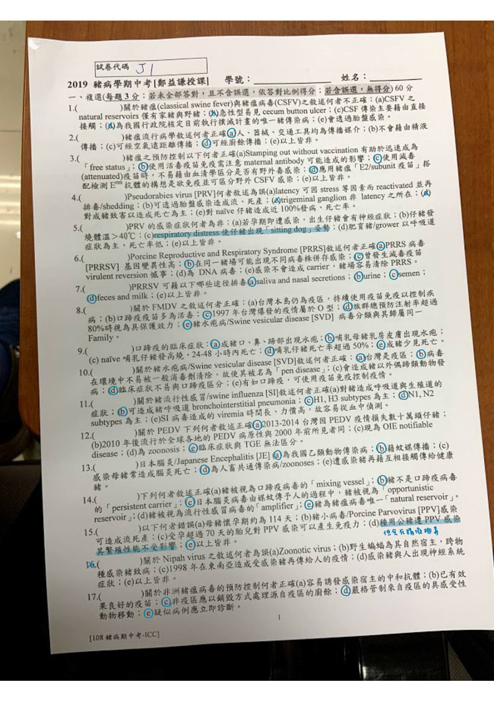
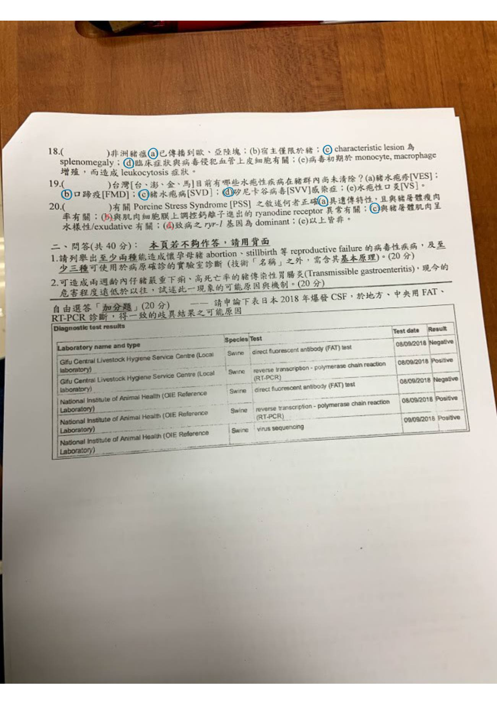
注意
題幹有的問「正確」、有的問「不正確／錯誤／為非」，每題卡片上都標出來了。第 2 週頁面曾把 Q1 的答案看錯，這次全部重新放大原卷核對過。
2019 Q1（複選，問「不正確」）
關於豬瘟（classical swine fever）與豬瘟病毒（CSFV）之敘述何者不正確？
- (A) CSFV 之 natural reservoirs 僅有家豬與野豬
- (B) 急性型易見 cecum button ulcer
- (C) CSF 傳染主要藉由直接接觸
- (D) 為我國行政院核定目前執行撲滅計畫之唯一豬傳染病
- (E) 會透過胎盤感染
答案：(B、D)
依考卷（藍筆叉掉的是錯誤敘述，叉在 (b) 與 (d)）：
(B) 錯：鈕扣狀潰瘍是慢性豬瘟的特徵，不是急性型。講義 p.113–114 列出迴盲瓣潰瘍與胃腸道黏膜鈕扣狀潰瘍；「屬慢性」的依據是考卷旁學長姐手寫筆記（button ulcer in cecum：chronic）與國考 103 年「鈕扣狀潰瘍不是急性豬瘟的特徵病變」。
(D) 錯：台灣目前執行撲滅計畫的豬傳染病不只豬瘟（講義 p.141：2006 後田間無病毒、2023 停打；補充：口蹄疫已於 2020 年 WOAH 認定非疫區）。
(A) 對：講義寫 CSF 易感動物為家豬與野豬（p.72）；國考 103 年「豬是唯一自然宿主」也是正確敘述。
(C) 對：直接接觸（p.86）。
(E) 對：經胎盤感染胎兒（p.87、p.101）。
本題詳解與 第 2 週頁面相同。
2019 Q2（複選，問「正確」）
豬瘟流行病學敘述何者正確？
- (A) 人、器械、交通工具均為傳播媒介
- (B) 不會藉由精液傳播
- (C) 可經空氣遠距離傳播
- (D) 可經廚餘傳播
- (E) 以上皆非
答案：(A、D)
(A) 對：環境污染、人與車輛（p.86）。
(D) 對：口途徑，吃入受污染食物（p.86）。
(B) 錯：精液會傳播（p.87）。
(C) 錯：講義只寫短距離飛沫（p.87），沒有遠距離空氣傳播。
本題詳解與 第 2 週頁面相同。
2019 Q3（複選，問「正確」）
豬瘟之預防控制以下何者正確？
- (A) Stamping out without vaccination 有助於迅速成為「free status」
- (B) 使用活毒疫苗免疫需注意 maternal antibody 可能造成的影響
- (C) 使用減毒（attenuated）疫苗時，不易藉由血清學區分是否有野外毒感染
- (D) 應用豬瘟「E2/subunit 疫苗」搭配檢測 Erns 抗體的構想是欲免疫並可區分野外 CSFV 感染
- (E) 以上皆非
答案：(B、C、D)
依考卷圈選 (b)(c)(d)，(a) 沒有圈：
(A) 未圈選：講義寫無疾病地區用撲殺政策（stamping out）並已使北美與大部分西歐根除 CSF（p.132），但考卷沒有把這個選項算成正確；講義沒有說明原因，建議向老師確認（推測：可能是「迅速」這個說法，或撲殺不適用於地方流行區）。
(B) 對：（補充）母源抗體會干擾活毒疫苗；講義未直接寫。
(C) 對：減毒活疫苗誘發的抗體與野外感染無法區分，所以才需要 DIVA（p.131）。
(D) 對：E2 次單位疫苗＋Erns ELISA 是 DIVA（p.137）。
本題詳解與 第 2 週頁面相同。
2019 Q4（複選，問「錯誤」）
Pseudorabies virus（PRV）何者敘述為誤？
- (A) latency 可因 stress 等因素而 reactivated 並再排毒／shedding
- (B) 可透過胎盤感染造成流、死產
- (C) trigeminal ganglion 非 latency 之所在
- (D) 對成豬致害以造成死亡為主
- (E) 對 naïve 仔豬造成近 100% 發病、死亡率
答案：(C、D)
(C) 錯，所以選它：三叉神經節是 PRV 潛伏的主要部位（第 4 週）。
(D) 錯：成豬以呼吸症狀為主、死亡率低（第 4 週）。
(A)(B)(E) 對。
本題詳解與 第 2 週頁面相同。
2019 Q5（複選，問「為非」）
PRV 的感染症狀何者為非？
- (A) 若孕期即遭感染，出生仔豬會有神經症狀
- (B) 仔豬發燒體溫 > 40°C
- (C) respiratory distress 使仔豬出現「sitting dog」姿勢
- (D) 肥育豬／grower 以呼吸道症狀為主，死亡率低
- (E) 以上皆非
答案：(C)
〔答案來源：考卷上 (c) 被螢光筆畫起來，沒有圈選記號〕
(C) 錯（所以選它）：犬坐姿勢（dog-sitting position）是 PRV 的神經症狀，講義和顫抖、運動失調、划水並列，不是呼吸窘迫造成的（疱疹講義 p.33）。
(A) 對：病毒可經胎盤感染，存活的仔豬出生後出現神經症狀。
(B) 對：仔豬高燒（p.33）。
(D) 對：較大的豬以呼吸道症狀為主，死亡率低（p.33）。
2019 Q6（複選，問「正確」）
有關 Porcine Reproductive and Respiratory Syndrome（PRRS）敘述何者正確？
- (A) PRRS 病毒（PRRSV）基因變異性高
- (B) 在同一豬場可能出現不同病毒株併存感染
- (C) 曾發生減毒疫苗 virulent reversion 憾事
- (D) 為 DNA 病毒
- (E) 感染不會造成 carrier，豬場容易清除 PRRS
答案：(A、B、C)
(A) 對：演化約 10⁻² substitutions/site/year、準種（p.101–102）。
(B) 對：同一頭豬內可同時有多個變異株，同場豬序列各不相同（p.102）。
(C) 對（考卷圈選）：（補充）減毒活毒疫苗毒力回復曾發生；講義只寫 MLV 安全性較低（p.115）。
(D) 錯：有封套單股正股 RNA（p.70）。
(E) 錯：持續感染、間歇排毒，很難從豬場清除（p.100）。
本題詳解與 第 3 週頁面相同。
2019 Q7（複選）
PRRSV 可藉以下哪些途徑排毒？
- (A) saliva and nasal secretions
- (B) urine
- (C) semen
- (D) feces and milk
- (E) 以上皆非
答案：(A、B、C、D)
(A)(B)(C)(D) 全對：唾液、鼻分泌物、尿、糞、精液都排毒（p.77）；乳汁或初乳可到感染後 9 天（p.78）。
本題詳解與 第 3 週頁面相同。
2019 Q8（複選，問「正確」）
關於 FMDV 之敘述何者正確？
- (A) 台灣本島仍為疫區，持續使用疫苗免疫以控制疾病
- (B) 口蹄疫疫苗多為活毒
- (C) 1997 年台灣爆發的疫情屬於 O 型
- (D) 族群總預防注射率超過 80% 時視為具群體保護效力
- (E) 豬水疱病／Swine vesicular disease [SVD] 病毒分類與其歸屬同一 Family
答案：(C、D、E)
〔答案來源：考卷藍筆圈選〕
(A) 錯：台灣 2018 年 7 月停止施打口蹄疫疫苗，2020 年 6 月台澎馬獲 WOAH 認定為不施打疫苗非疫區（第 4 週）。
(B) 錯：口蹄疫疫苗是不活化疫苗（補充）。
(C) 對：1997 年 O/Taiwan/97，親豬型（第 4 週）。
(D) 對：考卷圈選；群體免疫覆蓋率的概念（補充）。
(E) 對：SVDV（腸病毒屬）與 FMDV（Aphthovirus）都是小 RNA 病毒科（Picornaviridae）。
2019 Q9（複選）
口蹄疫的臨床症狀：
- (A) 成豬口、鼻、蹄部出現水疱
- (B) 哺乳母豬乳房皮膚出現水疱
- (C) naïve 哺乳仔豬發高燒，24–48 小時內死亡
- (D) 哺乳仔豬死亡率超過 50%
- (E) 成豬少見死亡
答案：(A、B、D、E)
〔答案來源：考卷藍筆圈選〕
(A)(B) 對：口鼻蹄冠、乳房水疱。
(D) 對：仔豬因心肌炎（虎斑心）猝死，死亡率高。
(E) 對：發病率高、成豬死亡率低（第 4 週）。
(C) 考卷沒有圈：仔豬多半是心肌炎猝死，不一定先有高燒；考卷為什麼不算，講義沒有直接說明 ⚠ 待確認。
2019 Q10（複選，問「正確」）
關於豬水疱病／Swine vesicular disease [SVD] 敘述何者正確？
- (A) 台灣是疫區
- (B) 病毒在環境中不易被一般消毒劑清除，故使其被名為「pen disease」
- (C) 會造成豬以外偶蹄類動物發病
- (D) 臨床症狀不易與口蹄疫區分
- (E) 有如口蹄疫，可使用疫苗免疫控制疫情
答案：(A、B、D)
〔答案來源：考卷藍筆圈選〕
(A) 對：台灣尚未清除 SVD（同卷 Q19）。
(B) 對：SVDV 抵抗力強，經圈欄間傳播（第 4 週）。
(C) 錯：SVD 只造成豬發病。
(D) 對：水疱外觀和 FMD 無法區分，要實驗室鑑別。
(E) 錯：SVD、SVV 都沒有商業疫苗（第 4 週）。
2019 Q11（複選，問「正確」）
關於豬流行性感冒／swine influenza [SI] 敘述何者正確？
- (A) 對豬造成呼吸道與生殖道的症狀
- (B) 可造成豬呼吸道 bronchointerstitial pneumonia
- (C) H1, H3 subtypes 為主
- (D) N1, N2 subtypes 為主
- (E) SI 病毒造成的 viremia 時間長、力價高，故容易從血中偵測 SI 病毒
答案：(B、C、D)
〔答案來源：考卷藍筆圈選〕
(B) 對：支氣管間質性肺炎。
(C)(D) 對：豬的三大型別 H1N1、H1N2、H3N2（第 5 週豬流感）。
(A) 錯：豬流感是呼吸道疾病。
(E) 錯：病毒血症少見且短，要採鼻拭子或肺組織，不從血液偵測（補充）。
2019 Q12（複選，問「正確」）
關於 PEDV 下列何者敘述正確？
- (A) 2013–2014 台灣因 PEDV 疫情損失數十萬頭仔豬
- (B) 2010 年後流行於全球各地的 PEDV 病原性與 2000 年前所見者同
- (C) 現為 OIE notifiable disease
- (D) 為 zoonosis
- (E) 臨床症狀與 TGE 無法區分
答案：(A、E)
〔答案來源：考卷藍筆圈選〕
(A) 對：台灣 2014 年 PED 大流行（第 5 週）。
(B) 錯：2010 年後的新型株致病力比過去高。
(C) 錯：考卷沒圈；PED 不是 WOAH 法定通報疾病（補充）。
(D) 錯：不是人畜共通。
(E) 對：臨床上和 TGE 無法區分，要靠實驗室診斷。
2019 Q13（複選）
日本腦炎／Japanese Encephalitis [JE]：
- (A) 為我國乙類動物傳染病
- (B) 藉蚊媒傳播
- (C) 感染母豬常造成腦炎死亡
- (D) 為人畜共通傳染病／zoonoses
- (E) 遭感染豬再藉互相接觸傳給健康豬
答案：(A、B、D)
〔答案來源：考卷藍筆圈選〕
(B)(D) 對：蚊媒、人畜共通（第 2 週）。
(A) 對：考卷圈選。
(C) 錯：母豬感染多表現為流產、死產、木乃伊胎，不是腦炎死亡。
(E) 錯：豬是增幅宿主，靠蚊子傳播，不靠豬隻互相接觸。
2019 Q14（複選，問「正確」）
下列何者敘述正確？
- (A) 豬被視為口蹄疫病毒的「mixing vessel」
- (B) 豬不是口蹄疫病毒的「persistent carrier」
- (C) 日本腦炎病毒由媒蚊傳予人的過程中，豬被視為「amplifier」
- (D) 豬被視為流行性感冒病毒的「opportunistic reservoir」
- (E) 豬為豬瘟病毒唯一「natural reservoir」
答案：(B、C、E)
〔答案來源：考卷藍筆圈選〕
(A) 錯：mixing vessel 是豬對流感的角色。
(B) 對：豬是 FMD 的增幅者（amplifier，呼出大量病毒）；持續帶原者是反芻獸（牛）。
(C) 對：JE 的增幅宿主（第 2 週）。
(D) 錯：流感是 mixing vessel。
(E) 對：與同卷 Q1 (A)「CSFV natural reservoirs 僅有家豬與野豬」一致。
2019 Q15（複選，問「錯誤」）
以下何者錯誤？
- (A) 母豬懷孕期約為 114 天
- (B) 豬小病毒（Porcine Parvovirus, PPV）感染可造成流死產
- (C) 受孕超過 70 天的胎兒對 PPV 感染可以產生免疫力
- (D) 種用公豬遭 PPV 感染其繁殖性能不受影響
- (E) 以上皆非
答案：(E)
(E) 對（考卷圈選）：(A)–(D) 都正確，所以「錯誤的」選以上皆非。
(A) 對：114–115 天（課程介紹 p.46）。
(B) 對：SMEDI。
(C) 對：約第 70 天胎兒具免疫勝任能力（p.131）。
(D) 對：PPV1 在成豬一般沒有臨床症狀（p.134）；考卷旁註「但會在精液排毒」（p.125）。
本題詳解與 第 3 週頁面相同。
2019 Q16（複選，問「為誤」）
關於 Nipah virus 之敘述何者為誤？
- (A) Zoonotic virus
- (B) 野生蝙蝠為其自然宿主，跨物種感染豬致病
- (C) 1998 年在東南亞造成受感染豬再傳給人的疫情
- (D) 感染豬與人出現神經系統症狀
- (E) 以上皆非
答案：⚠ 考卷無作答記號
範圍外（期末） 考卷上這題題號被打了叉，選項沒有圈，學長姐的答案不明 ⚠ 待確認。
（補充）四個敘述看起來都對：Nipah 是人畜共通病毒，果蝠是自然宿主，1998–1999 年馬來西亞豬傳人疫情，豬有呼吸道與神經症狀、人以腦炎為主。照這樣判斷會選 (E)。今年第 2、3 週講義沒有 Nipah（見期中總複習・範圍外）。
2019 Q17（複選，問「正確」）
關於非洲豬瘟病毒的預防控制何者正確？
- (A) 容易誘發感染宿主的中和抗體
- (B) 已有效果良好的疫苗
- (C) 非疫區應以銷毀方式處理源自疫區的廚餘
- (D) 嚴格管制來自疫區的具感受性動物移動
- (E) 疑似病例應立即診斷
答案：(C、D、E)
〔答案來源：考卷藍筆圈選〕
(A) 錯：ASFV 不易誘發完全中和抗體（第 2 週）。
(B) 錯（2019 年時）：當時沒有核准疫苗；越南 2022 年 6 月才核准全球第一支商業 ASF 疫苗（第 2 週）。
(C)(D)(E) 對：廚餘、動物移動管制、早期診斷。
2019 Q18（複選，問「正確」）
非洲豬瘟：
- (A) 已傳播到歐、亞陸塊
- (B) 宿主僅限於豬
- (C) characteristic lesion 為 splenomegaly
- (D) 臨床症狀與病毒侵犯血管上皮細胞有關
- (E) 病毒初期於 monocyte、macrophage 增殖，而造成 leukocytosis 症狀
答案：(A、C、D)
依考卷圈選 (A)(C)(D)：(A) 對：歐亞疫情（p.11）。(C) 對：脾臟腫大（p.45）。(D) 對（老師判定）：（補充）ASF 造成血管內皮傷害與出血，講義寫病毒複製於單核球與巨噬細胞（p.33）。
(B) 錯：宿主還有野豬、疣豬、叢林豬等（p.18）。
(E) 錯：講義沒有寫造成白血球增多；（補充）ASF 常見的是淋巴球減少。
本題詳解與 第 2 週頁面相同。
2019 Q19（複選）
台灣［台、澎、金、馬］目前有哪些水疱性疾病在豬群內尚未清除？
- (A) 豬水疱疹［VES］
- (B) 口蹄疫［FMD］
- (C) 豬水疱病［SVD］
- (D) 矽尼卡谷病毒［SVV］感染症
- (E) 水疱性口炎［VS］
答案：(B、C、D)
〔答案來源：考卷藍筆圈選，2019 年〕
(C)(D) 對：SVD、SVV 台灣仍有（第 4 週）。
(B) 2019 年出題時算對：台澎馬 2020 年 6 月才獲認定為不施打疫苗非疫區；題目寫「台、澎、金、馬」，金門的認定時間我沒有查到講義資料 ⚠ 待確認。今年再考要注意時間點。
(A)(E) 錯：VES、VS 台灣沒有（補充）。
2019 Q20（複選，問「正確」）
有關 Porcine Stress Syndrome [PSS] 之敘述何者正確？
- (A) 具遺傳特性，且與豬屠體瘦肉率有關
- (B) 與肌肉細胞膜上調控鈣離子進出的 ryanodine receptor 異常有關
- (C) 與豬屠體肌肉呈水樣性／exudative 有關
- (D) 致病之 ryr-1 基因為 dominant
- (E) 以上皆非
答案：(A、C)
範圍外（期末） 〔答案來源：考卷藍筆圈 (a)(c)，(b)(d) 紅筆打叉〕
(A)(C) 對：遺傳性、與瘦肉率有關；屠體呈 PSE（蒼白、柔軟、滲出）肉（補充）。
(D) 錯：ryr-1（halothane 基因）是隱性遺傳（補充）。
(B) 被打叉：RyR1 是肌漿網上的鈣離子釋放通道，題目寫「肌肉細胞膜」可能就是錯的地方（推測） ⚠ 待確認。PSS 屬營養與其他疾病，不在本次範圍。
3
鄭益謙老師 2022（111 學年）：與 2019 對照
照片上沒有作答記號，答案由 2019 年圈選依題幹正反反推。
重點
2022 年的 20 題是 2019 年同一組題目，只把題幹的「正確／不正確」對調，問答題與加分題也完全相同。所以背題目要背「每個敘述本身是對還是錯」，不要背答案字母。
原卷照片（2 張，姓名與學號已遮蓋）
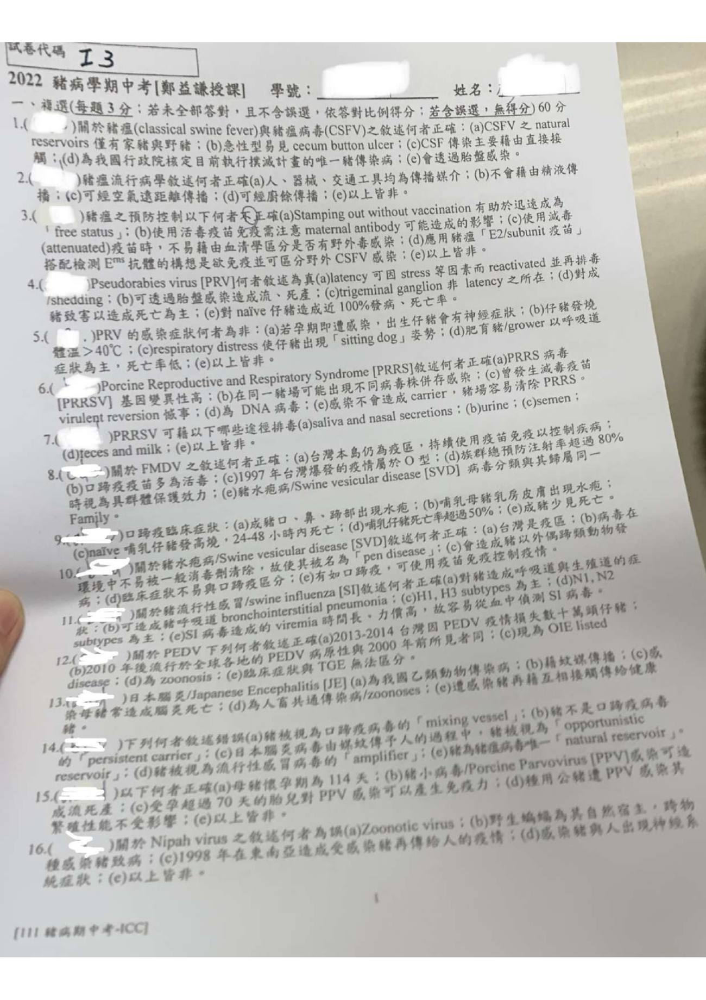
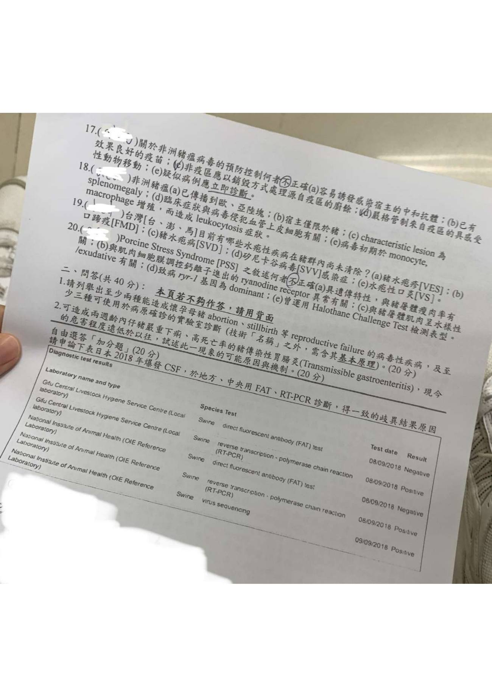
| 題號 | 2019 題幹問 | 2022 題幹問 | 2019 答案（考卷圈選） | 2022 答案（反推） |
|---|
| Q1 | 不正確 | 正確 | B、D | A、C、E |
| Q2 | 正確 | 正確 | A、D | A、D |
| Q3 | 正確 | 不正確 | B、C、D | A |
| Q4 | 錯誤 | 為真 | C、D | A、B、E |
| Q5 | 為非 | 為非 | C | C |
| Q6 | 正確 | 正確 | A、B、C | A、B、C |
| Q7 | 排毒途徑 | 排毒途徑 | A、B、C、D | A、B、C、D |
| Q8 | 正確 | 正確 | C、D、E | C、D、E |
| Q9 | 臨床症狀 | 臨床症狀 | A、B、D、E | A、B、D、E |
| Q10 | 正確 | 正確 | A、B、D | A、B、D |
| Q11 | 正確 | 正確 | B、C、D | B、C、D |
| Q12 | 正確 | 正確（(c) 改成「OIE listed」） | A、E | A、E |
| Q13 | 敘述 | 敘述 | A、B、D | A、B、D |
| Q14 | 正確 | 錯誤 | B、C、E | A、D |
| Q15 | 錯誤 | 正確 | E | A、B、C、D |
| Q16 | 為誤 | 為誤 | ⚠ 無記號 | ⚠ 同左 |
| Q17 | 正確 | 不正確 | C、D、E | A、B |
| Q18 | 敘述 | 敘述 | A、C、D | A、C、D |
| Q19 | 尚未清除 | 尚未清除 | B、C、D | C、D？（見下） |
| Q20 | 正確 | 不正確（多一個 (e) Halothane 試驗） | A、C | B、D |
兩卷互相印證
2019 Q3 的 (a)「Stamping out without vaccination 有助於迅速成為 free status」考卷沒有圈，原本不確定原因；2022 年把題幹改成「何者不正確」，學生把「不」圈起來，答案只剩 (a)。兩年一起看，(a) 被出題者當成錯誤敘述。
時間點
Q19「目前尚未清除」：台澎馬 2020 年 6 月已獲 WOAH 認定為不施打疫苗口蹄疫非疫區（第 4 週），所以 2022 年 (b) 口蹄疫可能已經不算「尚未清除」；題目寫「台、澎、金、馬」，金門的狀態講義沒有寫 ⚠ 待確認。Q8 (a)「台灣本島仍為疫區」在 2022 年同樣是錯的。
Q20 新增的 (e)
「曾運用 Halothane Challenge Test 檢測表型」是正確敘述（補充；學長姐筆記也寫 PSS 用 halothane 試驗），所以「不正確」的仍是 (b)(d)。
五個主題反覆出，2019 與 2022 的問答完全相同。
| 題目 | 合卷 Part A | 2019 | 2022 |
|---|
| 口蹄疫：病原、流行病學／傳播、致病機制、症狀 | Q1（8 分） | — | — |
| 豬瘟基因結構 → 新型疫苗與 DIVA 診斷構想 | Q2（8 分） | （複選 Q3 同概念） | （複選 Q3） |
| 造成流產的病毒 ≥2 種＋實驗室診斷 ≥3 種（含原理） | Q3（8 分） | 二-1（20 分） | 二-1（20 分） |
| 豬是流感 mixing vessel：病毒結構＋流行病學 | Q4（8 分） | （複選 Q14） | （複選 Q14） |
| TGE 危害下降的原因與機制 | Q5（8 分） | 二-2（20 分） | 二-2（20 分） |
| 加分題：日本 2018 CSF，FAT 與 RT-PCR 結果歧異 | — | 加分（20 分） | 加分（20 分） |
原卷照片（合卷第 1 頁，姓名與學號已遮蓋）
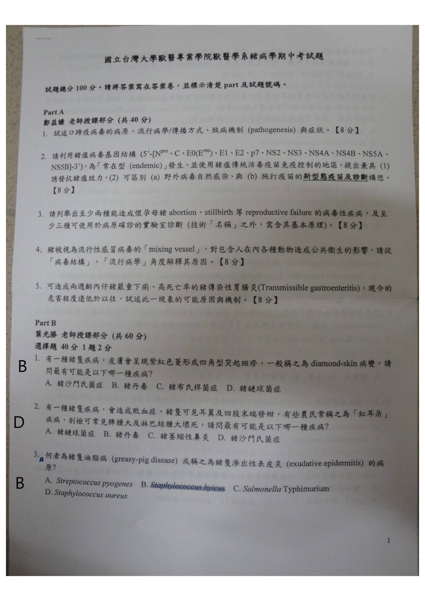
問答｜合卷 Part A Q1（8 分）
試述口蹄疫病毒的病原、流行病學／傳播方式、致病機制（pathogenesis）與症狀。（8 分）
見第 4 週：口蹄疫。骨架：Aphthovirus、無封套 ssRNA(+)、7 血清型；豬增幅者、牛指示者、羊維持者；直接接觸、餿水、氣膠、污染人車；咽黏膜 → 淋巴結 → 病毒血症；水疱、跛行、發病率高死亡率低、仔豬虎斑心。
本題詳解與 第 2 週頁面相同。
問答｜合卷 Part A Q2（8 分）
請利用豬瘟病毒基因結構（5'-[Npro、C、E0(Erns)、E1、E2、p7、NS2、NS3、NS4A、NS4B、NS5A、NS5B]-3'），為「常在型（endemic）」發生、並使用豬瘟傳統活毒疫苗免疫控制的地區，提出兼具（1）誘發抗豬瘟效力，（2）可區別（a）野外病毒自然感染、與（b）施打疫苗的新型態疫苗及診斷構想。（8 分）
骨架（本週講義 p.131–139）：E2 次單位疫苗（或 CP7_E2alf 嵌合活疫苗：BVDV 骨架、E2 換成 CSFV E2）誘發保護性中和抗體；因疫苗不含 Erns，搭配檢測 Erns 抗體的 ELISA：野外感染豬有 Erns 抗體、疫苗接種豬沒有 → DIVA。限制：Erns ELISA 敏感度與特異度差、BVDV／BDV 有交叉反應偽陽性，只適合族群篩檢。（也可提 NS3 為標記，見第 4 週 DIVA 表。）
本題詳解與 第 2 週頁面相同。
問答｜合卷 Part A Q3（8 分）＝ 2019、2022 二-1（20 分）
請列舉出至少兩種能造成懷孕母豬 abortion、stillbirth 等 reproductive failure 的病毒性疾病，及至少三種可使用於病原確診的實驗室診斷（技術「名稱」之外，需含其基本原理）。（20 分）
病毒（任選兩種以上）：PPV1、PRRSV、PCV2（PCV2-RD）、日本腦炎病毒、假性狂犬病病毒、古典豬瘟病毒。
實驗室診斷與原理（以本講義為例）：
- PCR／RT-PCR：以專一引子增幅病毒核酸（DNA 病毒如 PPV1、PCV2 用 PCR；RNA 病毒如 PRRSV 用 RT-PCR 先反轉錄成 cDNA），可驗胎兒組織、精液、血清；PPV1 最實用的方法（p.138）。
- 免疫螢光（IF）／免疫組織化學（IHC）：以帶螢光或酵素標記的專一抗體結合組織中的病毒抗原，在顯微鏡下看到訊號；用於胎兒組織 PPV1 抗原、PCV2 病灶內抗原（p.138、p.51）。
- 血球凝集抑制（HI）：PPV1 可凝集紅血球，血清中的專一抗體會抑制凝集，以抑制的最高稀釋倍數定量抗體（p.139）。
- ELISA：抗原固定在盤上，血清抗體結合後以酵素標記二次抗體呈色，適合高通量（p.109、p.139）。
- 病毒分離：接種感受性細胞（PRRSV 用 MARC-145），觀察細胞病變再以抗體確認（p.108）。
- 胎兒體液或未吸初乳血清的抗體：胎兒（>70 天）產生的抗體表示子宮內感染（p.139）。
本題詳解與 第 3 週頁面相同。
問答｜合卷 Part A Q4（8 分）
豬被視為流行性感冒病毒的「mixing vessel」，對包含人在內各種動物造成公共衛生的影響，請從「病毒結構」、「流行病學」角度解釋其原因。（8 分）
見第 5 週：混合容器理論。骨架：病毒結構——8 段負股 RNA 可基因重組、HA／NA 多亞型；流行病學——豬呼吸道同時有 α2,3（禽）與 α2,6（人）唾液酸受體，人、禽、豬病毒共同感染重組（2009 H1N1）；豬 Mx1 較弱、ANP32A 支持禽聚合酶；反向人畜共通頻繁；員工接種疫苗。
本題詳解與 第 2 週頁面相同。
問答｜合卷 Part A Q5（8 分）＝ 2019、2022 二-2（20 分）
可造成兩週齡內仔豬嚴重下痢、高死亡率的豬傳染性胃腸炎（Transmissible gastroenteritis），現今的危害程度遠低於以往，試述此一現象的可能原因與機制。
答題骨架（第 5 週 TGE）
- PRCV 出現：豬呼吸道冠狀病毒是 TGEV 的自然變異株，S 蛋白 N 端刪除約 227 個胺基酸，嗜性由腸道轉為呼吸道，不造成絨毛萎縮、死亡率低。
- PRCV 傳播快、普遍感染：經呼吸道（空氣）傳播，比糞口傳播的 TGEV 更容易擴散，豬群幾乎都感染過。
- 交叉保護：兩者只有一個血清型，S 蛋白主要中和抗原位點保守，感染 PRCV 產生的抗體能中和 TGEV。
- 共同黏膜免疫（common mucosal immunity）：PRCV 在支氣管相關淋巴組織（BALT）誘發 IgA、IgG 分泌細胞，這些細胞移到腸道相關淋巴組織（GALT），提供腸道保護；母豬經初乳與乳汁把抗體傳給仔豬（學長姐答案整理，機制細節為補充）。
- 結論：豬群對 TGE 有廣泛免疫，TGE 的發生與危害大幅下降。
加分題｜2019、2022（20 分）
自由選答「加分題」（20 分）：請申論下表日本 2018 年爆發 CSF，於地方、中央用 FAT、RT-PCR 診斷，得一致的歧異結果之可能原因。
| 實驗室 | 檢驗 | 日期 | 結果 |
|---|
| 岐阜縣家畜保健衛生所（地方） | 直接螢光抗體（FAT） | 2018/09/08 | 陰性 |
| 岐阜縣家畜保健衛生所（地方） | RT-PCR | 2018/09/08 | 陽性 |
| 國立動物衛生研究所（OIE 參考實驗室） | FAT | 2018/09/08 | 陰性 |
| 國立動物衛生研究所（OIE 參考實驗室） | RT-PCR | 2018/09/08 | 陽性 |
| 國立動物衛生研究所（OIE 參考實驗室） | 病毒定序 | 2018/09/09 | 陽性 |
答題方向（本站整理，非官方答案）：兩個實驗室結果一致，所以不是單一實驗室操作失誤，而是兩種方法本身的差異。
- 原理不同：FAT 用螢光標記抗體偵測冷凍組織切片中的病毒抗原，需要組織內有足量抗原；RT-PCR 先把病毒 RNA 反轉錄再增幅，偵測核酸，少量病毒就能陽性。
- 敏感度差異：RT-PCR 敏感度遠高於 FAT（第 2 週 CSF 診斷）。
- 病毒量低的可能原因：採樣時在感染早期；病毒株毒力不高、組織內抗原量少（補充：2018 年日本岐阜株屬中等毒力的 genotype 2.1）；採樣部位或組織保存影響抗原。
- 定序陽性：確認是 CSFV，並可判斷基因型與來源，排除疫苗株或交叉反應。
- 結論：FAT 陰性不能排除 CSF；疑似病例要以 RT-PCR＋定序確診。
單選 30 題＋問答 4 題。答案依老師檢討投影片與學長姐檢討。
| 大題 | 題型 | 配分 |
|---|
| 一 | 單選 30 題 | 每題 2 分，共 60 分 |
| 二 | 問答 4 題 | 每題 10 分，共 40 分 |
原卷照片（5 張，翻拍上課檢討投影片，姓名與學號已遮蓋）
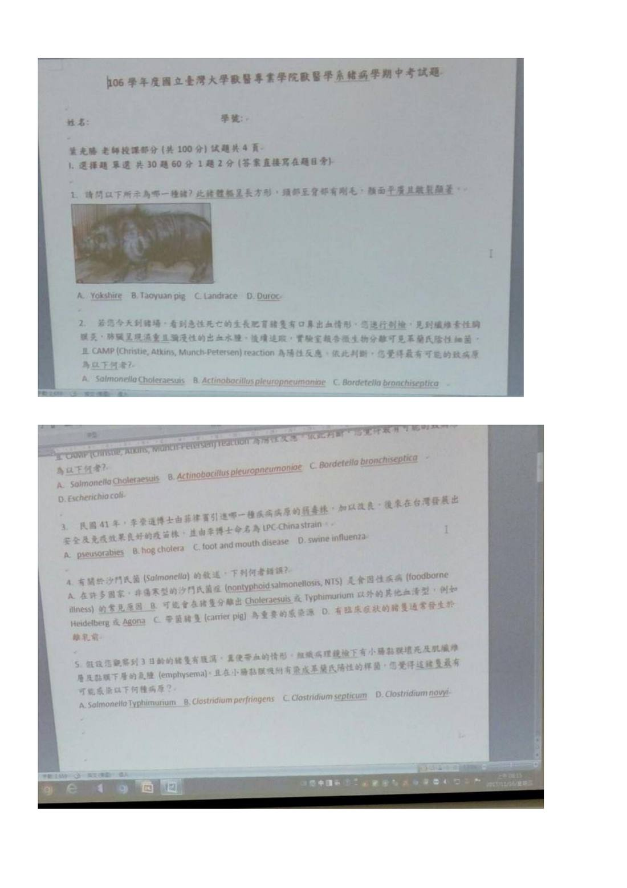
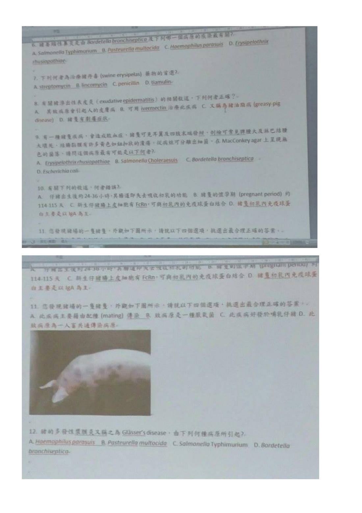
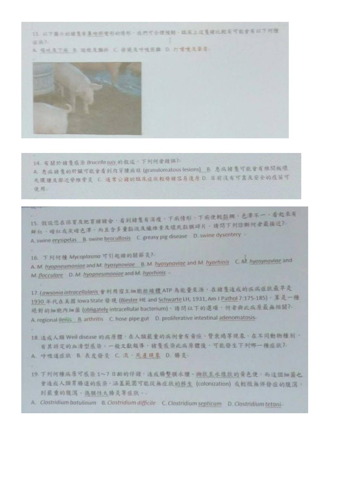
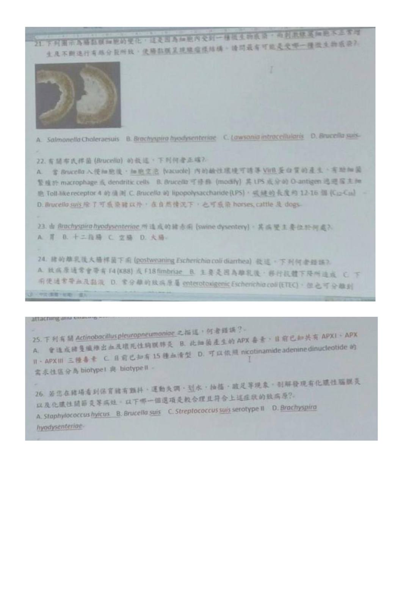
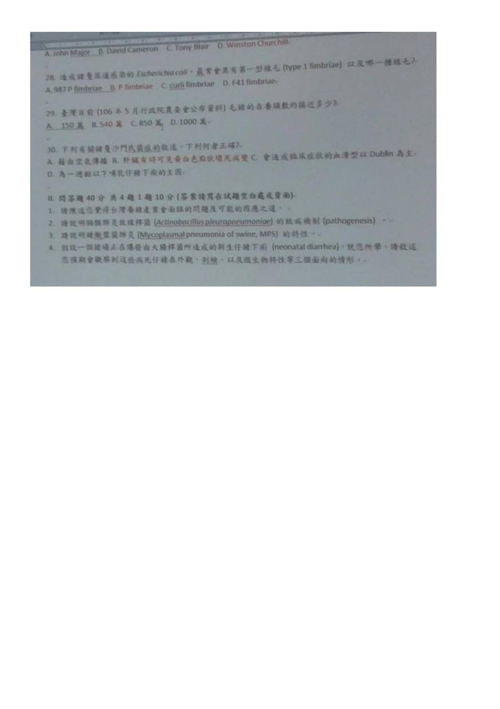
照片限制
原卷照片是翻拍投影幕，Q20 與 Q27 的題幹沒拍到，依學長姐檢討整理。
106 學年 Q1（單選）
請問以下所示為哪一種豬？此豬體軀呈長方形，頸部至背部有剛毛，顏面平廣且皺裂顯著。
- (A) Yokshire
- (B) Taoyuan pig
- (C) Landrace
- (D) Duroc
答案：(B)
〔答案來源：學長姐檢討「是桃園豬」〕桃園豬是黑色本地土種，顏面皺褶多（第 1 週台灣的豬種）。藍瑞斯是白色大垂耳、杜洛克是紅棕色、約克夏是白色立耳。
106 學年 Q2（單選）
若您今天到豬場，看到急性死亡的生長肥育豬隻有口鼻出血情形，您進行剖檢，見到纖維素性胸膜炎，肺臟呈現濕重且瀰漫性的出血水腫。後續追蹤，實驗室報告微生物分離可見革蘭氏陰性細菌，且 CAMP（Christie, Atkins, Munch-Petersen）reaction 為陽性反應，依此判斷，您覺得最有可能的致病原為以下何者？
- (A) Salmonella Choleraesuis
- (B) Actinobacillus pleuropneumoniae
- (C) Bordetella bronchiseptica
- (D) Escherichia coli
答案：(B)
(B) 對：與 110 年國考同一模式。
(A) 錯：敗血型沙門氏菌症是耳翼發紺、脾腫、肝壞死點。
(C) 錯：萎縮性鼻炎。
(D) 錯：腸道與泌尿道病原。
本題詳解與 第 6 週頁面相同。
106 學年 Q3（單選）
民國 41 年，李崇道博士由菲律賓引進哪一種疾病病原的弱毒株，加以改良，後來在台灣發展出安全及免疫效果良好的疫苗株，並由李博士命名為 LPC-China strain？
- (A) pseudorabies
- (B) hog cholera
- (C) foot and mouth disease
- (D) swine influenza
答案：(B)
〔答案來源：學長姐檢討〕LPC＝Lapinized Philippines Coronel，兔化豬瘟弱毒疫苗株（第 1 週防治史）。111 學年 Q4 把題目改成問「哪位學者」。
106 學年 Q4（單選）
有關於沙門氏菌（Salmonella）的敘述，下列何者錯誤？
- (A) 在許多國家，非傷寒型的沙門氏菌症（nontyphoid salmonellosis, NTS）是食因性疾病（foodborne illness）的常見原因
- (B) 可能會在豬隻分離出 Choleraesuis 或 Typhimurium 以外的其他血清型，例如 Heidelberg 或 Agona
- (C) 帶菌豬隻（carrier pig）為重要的感染源
- (D) 有臨床症狀的豬隻通常發生於離乳前
答案：(D)
(D) 錯，所以選它：大多數爆發在集約飼養的離乳豬（p.65）。
(A)(B)(C) 對（p.61–62）。
本題詳解與 第 7 週頁面相同。
106 學年 Q5（單選）
假設您觀察到 3 日齡的豬隻有腹瀉，糞便帶血的情形。組織病理鏡檢下有小腸黏膜壞死及肌纖維層及黏膜下層的氣腫（emphysema），且在小腸黏膜吸附有染成革蘭氏陽性的桿菌，您覺得這豬隻最有可能感染以下何種病原？
- (A) Salmonella Typhimurium
- (B) Clostridium perfringens
- (C) Clostridium septicum
- (D) Clostridium novyi
答案：(B)
範圍外（期末） 〔答案來源：學長姐檢討〕新生仔豬出血性壞死性腸炎＋氣腫＋革蘭氏陽性大桿菌 → C. perfringens（type C，補充）。C. septicum 是惡性水腫，C. novyi 是猝死、屍體膨脹。111 學年 Q6 同題改成區分 type A／type C。
106 學年 Q6（單選）
豬萎縮性鼻炎是由 Bordetella bronchiseptica 及下列哪一個病原的感染最有關？
- (A) Salmonella Typhimurium
- (B) Pasteurella multocida
- (C) Haemophilus parasuis
- (D) Erysipelothrix rhusiopathiae
答案：(B)
(B) 對（p.50）。
(C) 錯：Glässer 病。
(A)(D) 錯。
本題詳解與 第 6 週頁面相同。
106 學年 Q7（單選）
下列何者為治療豬丹毒（swine erysipelas）藥物的首選？
- (A) streptomycin
- (B) lincomycin
- (C) penicillin
- (D) tiamulin
答案：(C)
(C) 對（p.34）。
本題詳解與 第 7 週頁面相同。
106 學年 Q8（單選）
有關豬滲出性表皮炎（exudative epidermatitis）的相關敘述，下列何者正確？
- (A) 其致病原會引起人的皮膚病
- (B) 可用 ivermectin 治療此疾病
- (C) 又稱為豬油脂病（greasy-pig disease）
- (D) 豬隻有劇癢症狀
答案：(C)
(C) 對。
(A)(B)(D) 錯：非人畜共通、驅蟲劑無效、不癢。
本題詳解與 第 7 週頁面相同。
106 學年 Q9（單選）
有一種豬隻疾病，會造成敗血症，豬隻可見耳翼及四肢末端發紺，剖檢可常見脾腫大及淋巴結腫大壞死，結腸黏膜有許多黃色如鈕扣狀的潰瘍。從病灶可分離出細菌，在 MacConkey agar 上呈現無色的菌落。請問這個病原最有可能是以下何者？
- (A) Erysipelothrix rhusiopathiae
- (B) Salmonella Choleraesuis
- (C) Bordetella bronchiseptica
- (D) Escherichia coli
答案：(B)
(B) 對。
(A) 錯：革蘭氏陽性，皮膚是菱形疹。
(D) 錯：粉紅色菌落。
本題詳解與 第 7 週頁面相同。
106 學年 Q10（單選）
有關下列的敘述，何者錯誤？
- (A) 仔豬出生後約 24–36 小時，其腸道即失去吸收初乳的功能
- (B) 豬隻的懷孕期（pregnant period）約 114–115 天
- (C) 新生仔豬腸上皮細胞有 FcRn，可與初乳內的免疫球蛋白結合
- (D) 豬隻初乳內免疫球蛋白主要是以 IgA 為主
答案：(D)
〔答案來源：學長姐檢討〕初乳以 IgG 為主；IgA 是常乳的主要抗體（補充）。(A)(B)(C) 對：腸道閉鎖約 24–36 小時、懷孕期 114–115 天（第 1 週）。
106 學年 Q11（單選）
您發現豬場的一隻豬隻，外觀如下圖所示（皮膚菱形斑疹，同講義
p.18），請就以下四個選項，挑選出最合理正確的答案。
- (A) 此疾病主要藉由配種（mating）傳染
- (B) 致病原是一種厭氧菌
- (C) 此疾病好發於哺乳仔豬
- (D) 此致病原為一人畜共通傳染病原
答案：(D)
菱形疹＝急性豬丹毒，病原 Erysipelothrix rhusiopathiae。
(D) 對：人畜共通；人感染形成手指上的類丹毒（erysipeloid），也稱 fish handler's disease，豬與火雞帶菌率高（p.8、p.10）。
(A) 錯：靠帶菌豬的糞便、口鼻分泌物排菌，經受污染的土壤、地下水感染，不是性病；「經配種傳染」是布氏桿菌症的特色。
(B) 錯：革蘭氏陽性、細長、不運動、無芽孢桿菌，兼性厭氧，不是厭氧菌（p.5）。
(C) 錯：急性好發於接近上市體重的生長肥育豬，不是哺乳仔豬（p.16）；菱形疹見 p.18。
本題詳解與 第 7 週頁面相同。
106 學年 Q12（單選）
豬的多發性漿膜炎又稱之為 Glässer's disease，由下列何種病原所引起？
- (A) Haemophilus parasuis
- (B) Pasteurella multocida
- (C) Salmonella Typhimurium
- (D) Bordetella bronchiseptica
答案：(A)
(A) 對。
(B)(D) 錯：萎縮性鼻炎。
(C) 錯：腸炎型沙門氏菌症。
本題詳解與 第 6 週頁面相同。
106 學年 Q13（單選）
以下圖示的豬隻有鼻吻部變形的情形，我們可合理預期，臨床上這隻豬比較有可能會有以下何種症狀？（考卷附圖同講義
p.53 鼻吻部彎曲）
- (A) 嘔吐及下痢
- (B) 迴旋及顫抖
- (C) 發燒及呼吸困難
- (D) 打噴嚏及聳鼻
答案：(D)
(D) 對（p.65–66）。
(A)(B)(C) 錯：分別是腸道、神經、下呼吸道症狀。
本題詳解與 第 6 週頁面相同。
106 學年 Q14（單選）
有關於豬隻感染 Brucella suis 的敘述，下列何者錯誤？
- (A) 患病豬隻的肝臟可能會看到肉芽腫病灶（granulomatous lesions）
- (B) 患病豬隻可能會有椎間板壞死膿腫及鄰近脊椎骨炎
- (C) 通常公豬的臨床症狀較母豬容易復原
- (D) 目前沒有可靠及安全的疫苗可使用
答案：(C)
(C) 錯，所以選它。
(A)(B)(D) 對。
本題詳解與 第 7 週頁面相同。
106 學年 Q15（單選）
假設您在保育及肥育豬舍，看到豬隻有消瘦、下痢情形，下痢便較黏稠，色澤不一，看起來有鮮紅、暗紅或灰暗色澤，而且含多量黏液及纖維素及壞死黏膜碎片，請問下列診斷何者最接近？
- (A) swine erysipelas
- (B) swine brucellosis
- (C) greasy pig disease
- (D) swine dysentery
答案：(D)
範圍外（期末） 〔答案來源：學長姐檢討〕保育、肥育豬的黏液出血性下痢＝豬赤痢（Brachyspira hyodysenteriae），病變在大腸（同卷 Q23）。
106 學年 Q16（單選）
下列何種 Mycoplasma 可引起豬的關節炎？
- (A) M. hyopneumoniae and M. hyosynoviae
- (B) M. hyosynoviae and M. hyorhinis
- (C) M. hyosynoviae and M. flocculare
- (D) M. hyopneumoniae and M. hyorhinis
答案：(B)
範圍外（期末） 〔答案來源：學長姐檢討〕M. hyosynoviae（關節炎）、M. hyorhinis（多發性漿膜炎與關節炎）；M. hyopneumoniae 是地方性肺炎，M. flocculare 不致病（補充）。
106 學年 Q17（單選）
Lawsonia intracellularis 會利用宿主細胞粒線體 ATP 為能量來源，是一種絕對的細胞內細菌（obligately intracellular bacterium），請問以下的選項，何者與此病原最無相關？
- (A) regional ileitis
- (B) arthritis
- (C) hose pipe gut
- (D) proliferative intestinal adenomatosis
答案：(B)
範圍外（期末） 〔答案來源：學長姐檢討〕增生性腸病的各種名稱：區域性迴腸炎、水管腸、增生性腸腺瘤病；和關節炎無關。
106 學年 Q18（單選）
造成人類 Weil disease 的病原體，在人類嚴重的病例會有黃疸、腎衰竭等現象，在不同動物種別，有其特定的血清型感染，一般文獻報導，豬隻感染此病原體後，可能發生下列哪一種症狀？
- (A) 呼吸道症狀
- (B) 表皮發炎
- (C) 流、死產現象
- (D) 腸炎
答案：(C)
範圍外（期末） 〔答案來源：學長姐檢討〕鉤端螺旋體症在豬主要是繁殖障礙（流產、死產、弱仔）。111 學年 Q25 直接問 Weil syndrome 的病原。
106 學年 Q19（單選）
下列何種病原可感染 1–7 日齡的仔豬，造成腸繫膜水腫、糊狀至水樣狀的黃色便，而這個細菌也會造成人類腸胃道的感染，涵蓋範圍可能從無症狀的移生（colonization）或輕微無併發症的腹瀉，到嚴重的腹瀉、偽膜性大腸炎等症狀？
- (A) Clostridium botulinum
- (B) Clostridium difficile
- (C) Clostridium septicum
- (D) Clostridium tetani
答案：(B)
範圍外（期末） 〔答案來源：學長姐檢討〕關鍵字：腸繫膜水腫、人類偽膜性大腸炎 → C. difficile。111 學年 Q22 幾乎同題。
106 學年 Q20（單選）
有關豬隻水腫病（edema disease）的敘述，何者錯誤？（原卷照片缺這一題，選項依學長姐檢討整理，選項順序不一定與原卷相同）
- (A) 致病原可分泌毒素傷害血管內皮細胞
- (B) 常發生於出生 0–3 天的新生仔豬
- (C) 常見胃及腸繫膜下層水腫
- (D) 致病原若在血液培養基上生長，通常可見溶血
答案：(B)
〔答案來源：學長姐檢討〕水腫病發生在離乳後，不是剛出生（第 6 週）。Stx2e 傷害血管內皮；胃壁與結腸繫膜水腫；溶血性大腸桿菌。合卷 Q19、111 學年 Q13 都考同一組敘述。
106 學年 Q21（單選）
下列圖示為豬黏膜細胞的變化，這是因為細胞內受到一種微生物感染，而刺激腺窩細胞不正常增生及不斷進行有絲分裂所致，使腸黏膜呈現腺瘤樣結構，請問最有可能是受哪一種微生物感染？
- (A) Salmonella Choleraesuis
- (B) Brachyspira hyodysenteriae
- (C) Lawsonia intracellularis
- (D) Brucella suis
答案：(C)
範圍外（期末） 〔答案來源：學長姐檢討〕腺窩細胞增生、腸黏膜增厚成腺瘤樣 → 增生性腸病（L. intracellularis）。
106 學年 Q22（單選）
有關布氏桿菌（Brucella）的敘述，下列何者正確？
- (A) 當 Brucella 入侵細胞後，細胞空泡（vacuole）內的鹼性環境可誘導 VirB 蛋白質的產生，有助細菌繁殖於 macrophage 或 dendritic cells
- (B) Brucella 可修飾（modify）其 LPS 成分的 O-antigen 逃避宿主細胞 Toll-like receptor 4 的偵測
- (C) Brucella 的 lipopolysaccharide（LPS），碳鏈的長度約 12–16 個（C12–C16）
- (D) Brucella suis 除了可感染豬以外，在自然情況下，也可感染 horses, cattle 及 dogs
答案：(D)
(D) 對（p.158）。
(A) 錯：是酸性環境（p.160）。
(B)(C) 錯（老師紅字答案為 D）：（補充）Brucella 的 LPS 特點在 lipid A 為長鏈脂肪酸（遠長於 C12–C16）、O-antigen 結構使其低內毒性；講義只寫「低內毒性 LPS」。
本題詳解與 第 7 週頁面相同。
106 學年 Q23（單選）
由 Brachyspira hyodysenteriae 所造成的豬赤痢（swine dysentery），其病變主要位於何處？
- (A) 胃
- (B) 十二指腸
- (C) 空腸
- (D) 大腸
答案：(D)
範圍外（期末） 〔答案來源：學長姐檢討〕豬赤痢是大腸（盲腸、結腸）的黏液出血性腸炎。
106 學年 Q24（單選）
豬的離乳後大腸桿菌下痢（postweaning Escherichia coli diarrhea）敘述，下列何者錯誤？
- (A) 致病原通常會帶有 F4（K88）或 F18 fimbriae
- (B) 主要是因為離乳後，移行抗體下降所造成
- (C) 下痢便通常帶血及黏液
- (D) 常分離的致病原屬 enterotoxigenic Escherichia coli（ETEC），但也可分離到 attaching and effacing E. coli
答案：(C)
(C) 錯，所以選它：E. coli 下痢不帶血。
(A) 對（p.130）。
(B) 對：離乳失去乳汁抗體（p.129）。
(D) 對（p.130）。
本題詳解與 第 6 週頁面相同。
106 學年 Q25（單選）
下列有關 Actinobacillus pleuropneumoniae 之描述，何者錯誤？
- (A) 會造成豬隻纖維出血及壞死性胸膜肺炎
- (B) 此細菌產生的 APX 毒素，目前已知共有 APXI、APXII、APXIII 三種毒素
- (C) 目前已知有 15 種血清型
- (D) 可以依照 nicotinamide adenine dinucleotide 的需求性區分為 biotype I 與 biotype II
答案：(B)
(B) 錯，所以選它（老師紅字）：已知 4 種（ApxI–IV）。
(A) 對。
(C) 當年（2017）的說法；現在講義寫 19 種血清型，今年考試要寫 19。
(D) 對。
本題詳解與 第 6 週頁面相同。
106 學年 Q26（單選）
若您在豬場看到保育豬有顫抖、運動失調、划水、抽搐、跛足等現象，剖解發現有化膿性腦膜炎以及化膿性關節炎等病灶，以下哪一個選項是較合理且符合上述症狀的致病原？
- (A) Staphylococcus hyicus
- (B) Brucella suis
- (C) Streptococcus suis serotype II
- (D) Brachyspira hyodysenteriae
答案：(C)
範圍外（期末） 〔答案來源：學長姐檢討〕保育豬化膿性腦膜炎＋關節炎＝豬鏈球菌第 2 型。合卷 Q14 同一考點。
106 學年 Q27（單選）
誰說了「I like pigs. Dogs look up to us. Cats look down on us. But pigs treat us as equals.」？
- (A) John Major
- (B) David Cameron
- (C) Tony Blair
- (D) Winston Churchill
答案：(D)
〔答案來源：學長姐檢討〕送分題（老師課堂提過的名言）。
106 學年 Q28（單選）
造成豬隻尿道感染的 Escherichia coli，最常會具有第一型線毛（type 1 fimbriae）以及哪一種線毛？
- (A) 987P fimbriae
- (B) P fimbriae
- (C) curli fimbriae
- (D) F41 fimbriae
答案：(B)
(B) 對（p.148）。
(A)(D) 錯：ETEC 腸道線毛（F6、F41）。
(C) 錯。
本題詳解與 第 6 週頁面相同。
106 學年 Q29（單選）
台灣目前（106 年 5 月行政院農委會公布資料）毛豬的在養頭數約多少？
- (A) 150 萬
- (B) 540 萬
- (C) 850 萬
- (D) 1000 萬
答案：(B)
〔答案來源：學長姐檢討〕111 學年 Q18 同題，當年答案是 537 萬（第 1 週）。數字會隨年份更新，今年看講義上的最新數字。
106 學年 Q30（單選）
下列有關豬隻沙門氏菌症的敘述，下列何者正確？
- (A) 藉由空氣傳播
- (B) 肝臟有時可見黃白色點狀壞死病變
- (C) 會造成臨床症狀的血清型以 Dublin 為主
- (D) 為一週齡以下哺乳仔豬下痢的主因
答案：(B)
(B) 對：敗血型沙門氏菌症的肝臟可見黃白色點狀壞死（凝固性壞死，稱副傷寒小節 paratyphoid nodule，p.84）。
(A) 錯：沙門氏菌主要是糞口傳播（帶菌豬是最重要的感染源，p.63），不經空氣傳播（補充：國考也考過「空氣傳播、節肢動物叮咬、配種傳播」都是錯的）。
(C) 錯：造成豬臨床疾病的血清型以 Choleraesuis（豬適應型、敗血症）與 Typhimurium（宿主廣、腸結腸炎）為主（p.60）；Dublin 主要與牛有關（補充）。
(D) 錯：沙門氏菌症多發生在集約飼養的離乳豬（p.65）；一週齡以下哺乳仔豬下痢的主因是大腸桿菌（ETEC，第 6 週）。
本題詳解與 第 7 週頁面相同。
問答題
問答｜106 學年 Q1（10 分）＝ 111 學年 Q1
請陳述您覺得目前台灣養豬產業面臨的問題及可能的因應之道（問題及因應之道都要寫）。
學長姐答案（106 學年）：密集飼養造成疫病防治困難；以業者為主、政府輔助為共識，養豬場應發揮主動改善；疫情通報要迅速確實、不得隱瞞。
可以再補的點（補充，依第 1 週講義與一般產業現況整理）：
- 疫病：非洲豬瘟境外威脅（廚餘、走私肉品、野豬）；PRRS、PCV2、PED 等地方流行病 → 生物安全、疫苗計畫、邊境管制、疫情通報（第 1 週防治史）。
- 抗生素使用與抗藥性 → 減抗、用藥紀錄、獸醫處方（第 1 週細菌抗藥性）。
- 環保：廢水與臭味 → 沼氣發電、廢水資源化。
- 成本與市場：飼料原料仰賴進口、進口豬肉競爭 → 提升效率、品牌與產銷履歷。
- 人力：缺工與高齡化 → 自動化、規模化。
老師要的是「問題＋因應」成對寫，每個問題後面直接接對策。
問答｜106 學年 Q2（10 分）＝ 合卷 Part B Q4
請說明胸膜肺炎放線桿菌（Actinobacillus pleuropneumoniae）的致病機制（pathogenesis）。
講義 p.15 的四個階段：
- 定殖（colonization）：以線毛、LPS 黏附下呼吸道（肺泡與細支氣管末端上皮）。
- 營養攝取（nutrient uptake）：取得鐵、鎳。（補充：以 transferrin binding protein TbpA/TbpB 與宿主搶鐵；鎳是 urease 所需。）
- 逃避宿主清除：莢膜與 LPS 抵抗吞噬殺菌，並有抗氧化壓力防禦。（補充：SodC、DnaK。）
- 破壞宿主組織：Apx 毒素（ApxI 強溶血強細胞毒、ApxII 弱溶血中等細胞毒、ApxIII 不溶血強細胞毒、ApxIV 全部血清型都有）造成溶血與細胞毒殺；LPS 引起發炎、細胞激素與內毒素性休克。最終組織壞死，形成纖維素出血壞死性胸膜肺炎。
可加一句誘因：壓力（擁擠、通風差、溫差、混群）與 PR、PRRS 混合感染會加重病情（p.14）。
本題詳解與 第 6 週頁面相同。
問答｜106 學年 Q3（10 分）
請說明豬黴漿菌肺炎（Mycoplasmal pneumonia of swine, MPS）的特性。（老師說可以提及飼料換肉率）
範圍外（期末） 學長姐答案要點：
- 病原 Mycoplasma hyopneumoniae，慢性呼吸道疾病（地方性肺炎）。
- 空氣傳播；所有年齡都可感染。
- 發病率高、死亡率低（學長姐寫 30–90% 感染）。
- 破壞纖毛上皮，容易二次感染（例如與 PRRSV、PCV2、P. multocida 混合感染）。
- 降低飼料換肉率與生長速度，經濟損失主要在這裡。
- 台灣高溫濕熱、飼養密集，容易感染。
問答｜106 學年 Q4（10 分）＝ 合卷 Part B Q1
假設一個豬場正在爆發由大腸桿菌所造成的新生仔豬下痢，請敘述您預期會觀察到這些病死仔豬在外觀、剖檢，以及微生物特性等三個面向的情形（或：說明其致病機制）。
外觀：0–4 日齡仔豬黃色水樣下痢、嚴重脫水、眼窩下陷、消瘦、毛粗、肋骨與骨盆突出，畏冷擠成一堆，會陰沾滿糞便（p.122–125）。
剖檢：小腸擴張、壁薄透明、腸腔積液；黏膜蒼白不發炎、絨毛不萎縮；胃內充滿乳汁，凝乳塊常呈層狀（p.123、p.126–127）。
微生物特性與致病機制：ETEC，革蘭氏陰性桿菌、腸內細菌科。以線毛 F4（K88）、F5（K99）、F6（987P）、F41 黏附小腸上皮（不侵入、不破壞微絨毛），分泌腸毒素：LT 活化 adenylate cyclase → cAMP↑；STa 活化 guanylate cyclase → cGMP↑（另有 STb）→ 碳酸氫根、鈉、氯與水分泌到腸腔 → 分泌性下痢 → 脫水、代謝性酸中毒 → 死亡（p.117–118）。
本題詳解與 第 6 週頁面相同。
和鄭益謙老師 Part A 印在同一份考卷。答案依考卷旁手寫答案。
| 大題 | 題型 | 配分 |
|---|
| 選擇 | 單選 20 題 | 每題 2 分，共 40 分 |
| 問答 | 原卷寫 5 題 × 5 分，照片只有 4 題 | 20 分 |
原卷照片（3 張，姓名與學號已遮蓋）
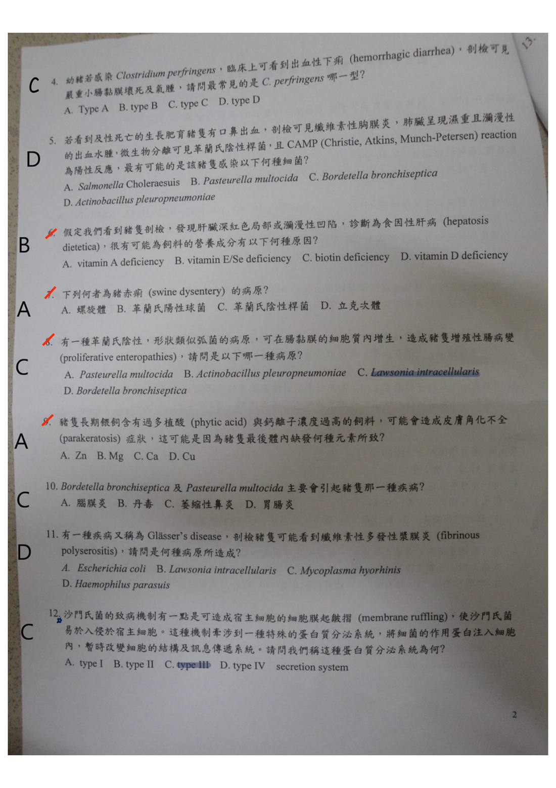
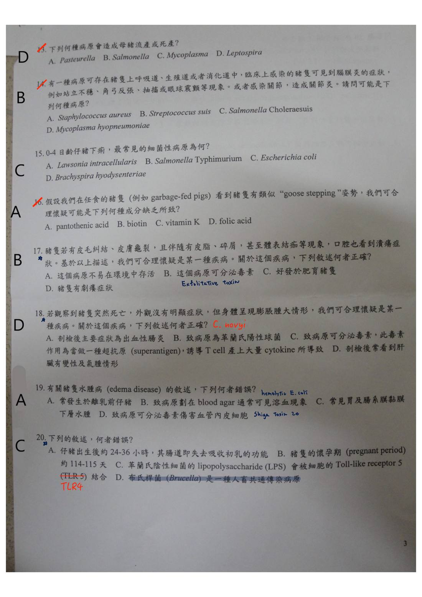
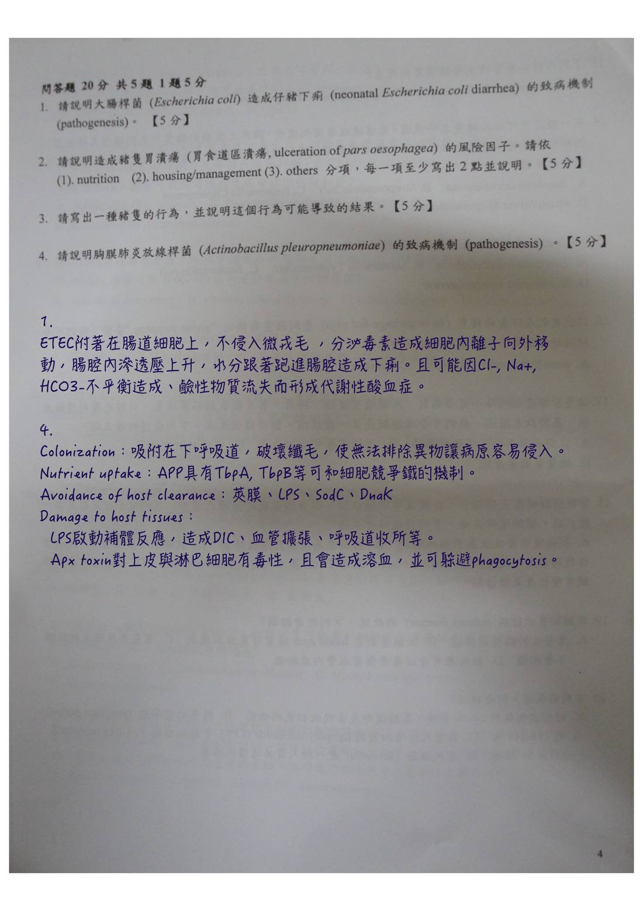
合卷 Part B Q1（單選）
有一種豬隻疾病，皮膚會呈現紫紅色菱形或四角型突起斑疹，一般稱之為 diamond-skin 病變，請問最有可能是以下哪一種疾病？
- (A) 豬沙門氏菌症
- (B) 豬丹毒
- (C) 豬布氏桿菌症
- (D) 豬鏈球菌症
答案：(B)
(B) 對。
本題詳解與 第 7 週頁面相同。
合卷 Part B Q2（單選）
有一種豬隻疾病，會造成敗血症，豬隻可見耳翼及四肢末端發紺，有些農民常稱之為「紅耳朵」疾病，剖檢可常見脾腫大及淋巴結腫大壞死，請問最有可能是以下哪一種疾病？
- (A) 豬鏈球菌症
- (B) 豬丹毒
- (C) 豬萎縮性鼻炎
- (D) 豬沙門氏菌症
答案：(D)
(D) 對（p.76）。
本題詳解與 第 7 週頁面相同。
合卷 Part B Q3（單選）
何者為豬隻油脂病（greasy-pig disease）或稱之為豬隻滲出性表皮炎（exudative epidermitis）的病原？
- (A) Streptococcus pyogenes
- (B) Staphylococcus hyicus
- (C) Salmonella Typhimurium
- (D) Staphylococcus aureus
答案：(B)
(B) 對。
本題詳解與 第 7 週頁面相同。
合卷 Part B Q4（單選）
幼豬若感染 Clostridium perfringens，臨床上可看到出血性下痢（hemorrhagic diarrhea），剖檢可見嚴重小腸黏膜壞死及氣腫，請問最常見的是 C. perfringens 哪一型？
- (A) Type A
- (B) type B
- (C) type C
- (D) type D
答案：(C)
範圍外（期末） 〔答案來源：考卷旁手寫〕新生仔豬出血性壞死性腸炎＝type C（β 毒素，補充）。
合卷 Part B Q5（單選）
若看到急性死亡的生長肥育豬隻有口鼻出血，剖檢可見纖維素性胸膜炎，肺臟呈現濕重且瀰漫性的出血水腫，微生物分離可見革蘭氏陰性桿菌，且 CAMP reaction 為陽性反應，最有可能的是該豬隻感染以下何種細菌？
- (A) Salmonella Choleraesuis
- (B) Pasteurella multocida
- (C) Bordetella bronchiseptica
- (D) Actinobacillus pleuropneumoniae
答案：(D)
(D) 對：與 106 學年 Q2、110 年國考同一題型。
(A)(B)(C) 錯。
本題詳解與 第 6 週頁面相同。
合卷 Part B Q6（單選）
假定我們看到豬隻剖檢，發現肝臟深紅色局部或瀰漫性凹陷，診斷為食因性肝病（hepatosis dietetica），很有可能為飼料的營養成分有以下何種原因？
- (A) vitamin A deficiency
- (B) vitamin E/Se deficiency
- (C) biotin deficiency
- (D) vitamin D deficiency
答案：(B)
範圍外（期末） 〔答案來源：考卷旁手寫；融合檔「光勝考古選擇」也是這個答案〕食因性肝病＝維生素 E／硒缺乏（補充）。
合卷 Part B Q7（單選）
下列何者為豬赤痢（swine dysentery）的病原？
- (A) 螺旋體
- (B) 革蘭氏陽性球菌
- (C) 革蘭氏陰性桿菌
- (D) 立克次體
答案：(A)
範圍外（期末） 〔答案來源：考卷旁手寫〕Brachyspira hyodysenteriae 是螺旋體（106 學年 Q23 考病變位置）。
合卷 Part B Q8（單選）
有一種革蘭氏陰性，形狀類似弧菌的病原，可在腸黏膜的細胞質內增生，造成豬隻增殖性腸病變（proliferative enteropathies），請問是以下哪一種病原？
- (A) Pasteurella multocida
- (B) Actinobacillus pleuropneumoniae
- (C) Lawsonia intracellularis
- (D) Bordetella bronchiseptica
答案：(C)
範圍外（期末） 〔答案來源：考卷旁手寫〕106 學年 Q17、Q21 同一病原。
合卷 Part B Q9（單選）
豬隻長期餵飼含有過多植酸（phytic acid）與鈣離子濃度過高的飼料，可能會造成皮膚角化不全（parakeratosis）症狀，這可能是因為豬隻最後體內缺發何種元素所致？
- (A) Zn
- (B) Mg
- (C) Ca
- (D) Cu
答案：(A)
範圍外（期末） 〔答案來源：考卷旁手寫〕植酸與高鈣妨礙鋅吸收 → 鋅缺乏 → 角化不全（補充）。
合卷 Part B Q10（單選）
Bordetella bronchiseptica 及 Pasteurella multocida 主要會引起豬隻那一種疾病？
- (A) 腦膜炎
- (B) 丹毒
- (C) 萎縮性鼻炎
- (D) 胃腸炎
答案：(C)
(C) 對。
(A) 錯：Glässer 病、豬鏈球菌。
(B) 錯：E. rhusiopathiae。
(D) 錯。
本題詳解與 第 6 週頁面相同。
合卷 Part B Q11（單選）
有一種疾病又稱為 Glässer's disease，剖檢豬隻可能看到纖維素性多發性漿膜炎（fibrinous polyserositis），請問是何種病原所造成？
- (A) Escherichia coli
- (B) Lawsonia intracellularis
- (C) Mycoplasma hyorhinis
- (D) Haemophilus parasuis
答案：(D)
(D) 對。
(C) 補充：M. hyorhinis 也會造成多發性漿膜炎與關節炎，但「Glässer's disease」專指 H. parasuis。
(A)(B) 錯。
本題詳解與 第 6 週頁面相同。
合卷 Part B Q12（單選）
沙門氏菌的致病機制有一點是可造成宿主細胞的細胞膜起皺摺（membrane ruffling），使沙門氏菌易於入侵宿主細胞。這種機制牽涉到一種特殊的蛋白質分泌系統，將細菌的作用蛋白注入細胞內，暫時改變細胞的結構及訊息傳遞系統。請問我們稱這種蛋白質分泌系統為何？
- (A) type I
- (B) type II
- (C) type III
- (D) type IV secretion system
答案：(C)
(C) 對（p.66）。
本題詳解與 第 7 週頁面相同。
合卷 Part B Q13（單選）
下列何種病原會造成母豬流產或死產？
- (A) Pasteurella
- (B) Salmonella
- (C) Mycoplasma
- (D) Leptospira
答案：(D)
範圍外（期末） 〔答案來源：考卷旁手寫〕鉤端螺旋體症在豬主要表現為繁殖障礙（106 學年 Q18）。
合卷 Part B Q14（單選）
有一種病原可存在豬隻上呼吸道、生殖道或者消化道中，臨床上感染的豬隻可見到腦膜炎的症狀，例如站立不穩、角弓反張、抽搐或眼球震顫等現象。或者感染關節，造成關節炎。請問可能是下列何種病原？
- (A) Staphylococcus aureus
- (B) Streptococcus suis
- (C) Salmonella Choleraesuis
- (D) Mycoplasma hyopneumoniae
答案：(B)
範圍外（期末） 〔答案來源：考卷旁手寫〕腦膜炎＋關節炎＝豬鏈球菌（106 學年 Q26）。
合卷 Part B Q15（單選）
0–4 日齡仔豬下痢，最常見的細菌性病原為何？
- (A) Lawsonia intracellularis
- (B) Salmonella Typhimurium
- (C) Escherichia coli
- (D) Brachyspira hyodysenteriae
答案：(C)
(C) 對：講義寫「哺乳仔豬的疾病中，下痢最常見、也可能最重要」，最常發生在 0–4 日齡，病原是腸毒素型大腸桿菌（ETEC）——靠線毛黏附小腸，再分泌腸毒素造成分泌性下痢（p.117）。
(A) 錯：L. intracellularis 造成增生性腸病（區域性迴腸炎、水管腸），好發在離乳後較大的豬（補充，約 6–20 週齡，屬期末範圍），不是剛出生的仔豬。
(B) 錯：沙門氏菌症多發生在集約飼養的離乳豬，Typhimurium 約 6 週齡起反覆下痢（第 7 週）。
(D) 錯：B. hyodysenteriae 造成豬赤痢，好發在保育與肥育豬，病變在大腸（補充，屬期末範圍）。
本題詳解與 第 6 週頁面相同。
合卷 Part B Q16（單選）
假設我們在任食的豬隻（例如 garbage-fed pigs）看到豬隻有類似「goose stepping」姿勢，我們可合理懷疑可能是下列何種成分缺乏所致？
- (A) pantothenic acid
- (B) biotin
- (C) vitamin K
- (D) folic acid
答案：(A)
範圍外（期末） 〔答案來源：考卷旁手寫；融合檔「光勝考古選擇」同〕鵝步＝泛酸缺乏（補充）。
合卷 Part B Q17（單選）
豬隻若有皮毛糾結、皮膚龜裂，且伴隨有皮脂、碎屑，甚至體表結痂等現象，口腔也看到潰瘍症狀。基於以上描述，我們可合理懷疑是某一種疾病。關於這個疾病，下列敘述何者正確？
- (A) 這個病原不易在環境中存活
- (B) 這個病原可分泌毒素
- (C) 好發於肥育豬隻
- (D) 豬隻有劇癢症狀
答案：(B)
(B) 對：剝落毒素（考卷旁手寫 exfoliative toxin）。
(A) 錯：環境抵抗力強（p.119）。
(C) 錯：仔豬。
(D) 錯。
本題詳解與 第 7 週頁面相同。
合卷 Part B Q18（單選）
若觀察到豬隻突然死亡，外觀沒有明顯症狀，但身體呈現膨脹腫大情形，我們可合理懷疑是某一種疾病。關於這個疾病，下列敘述何者正確？
- (A) 剖檢後主要症狀為出血性腸炎
- (B) 致病原為革蘭氏陽性球菌
- (C) 致病原可分泌毒素，此毒素作用為當做一種超抗原（superantigen），誘導 T cell 產生大量 cytokine 所導致
- (D) 剖檢後常看到肝臟有變性及氣腫情形
答案：(D)
範圍外（期末） 〔答案來源：考卷旁手寫「C. novyi」〕猝死、屍體迅速膨脹、肝臟氣腫（泡沫肝）＝Clostridium novyi（補充）。(B) 錯：梭菌是革蘭氏陽性桿菌。
合卷 Part B Q19（單選）
有關豬隻水腫病（edema disease）的敘述，下列何者錯誤？
- (A) 常發生於離乳前仔豬
- (B) 致病原劃在 blood agar 通常可見溶血現象
- (C) 常見胃及腸系膜黏膜下層水腫
- (D) 致病原可分泌毒素傷害血管內皮細胞
答案：(A)
(A) 錯，所以選它：離乳後。
(B) 對：溶血性 E. coli。
(C) 對。
(D) 對：Stx2e。
本題詳解與 第 6 週頁面相同。
合卷 Part B Q20（單選）
下列的敘述，何者錯誤？
- (A) 仔豬出生後約 24–36 小時，其腸道即失去吸收初乳的功能
- (B) 豬隻的懷孕期約 114–115 天
- (C) 革蘭氏陰性細菌的 lipopolysaccharide（LPS）會被細胞的 Toll-like receptor 5（TLR 5）結合
- (D) 布氏桿菌（Brucella）是一種人畜共通傳染病原
答案：(C)
(C) 錯，所以選它：LPS 的受體是 TLR4（考卷旁手寫更正；TLR5 辨識鞭毛蛋白，補充）。
(B) 對：課程介紹講義 p.46。
(A) 對（補充）。
(D) 對。
本題詳解與 第 7 週頁面相同。
問答題
問答｜合卷 Part B Q1（5 分）＝ 106 學年 Q4
假設一個豬場正在爆發由大腸桿菌所造成的新生仔豬下痢，請敘述您預期會觀察到這些病死仔豬在外觀、剖檢，以及微生物特性等三個面向的情形（或：說明其致病機制）。
外觀：0–4 日齡仔豬黃色水樣下痢、嚴重脫水、眼窩下陷、消瘦、毛粗、肋骨與骨盆突出，畏冷擠成一堆，會陰沾滿糞便（p.122–125）。
剖檢：小腸擴張、壁薄透明、腸腔積液；黏膜蒼白不發炎、絨毛不萎縮；胃內充滿乳汁，凝乳塊常呈層狀（p.123、p.126–127）。
微生物特性與致病機制：ETEC，革蘭氏陰性桿菌、腸內細菌科。以線毛 F4（K88）、F5（K99）、F6（987P）、F41 黏附小腸上皮（不侵入、不破壞微絨毛），分泌腸毒素：LT 活化 adenylate cyclase → cAMP↑；STa 活化 guanylate cyclase → cGMP↑（另有 STb）→ 碳酸氫根、鈉、氯與水分泌到腸腔 → 分泌性下痢 → 脫水、代謝性酸中毒 → 死亡（p.117–118）。
本題詳解與 第 6 週頁面相同。
問答｜合卷 Part B Q2（5 分）
請說明造成豬隻胃潰瘍（胃食道區潰瘍，ulceration of pars oesophagea）的風險因子。請依 (1) nutrition (2) housing/management (3) others 分項，每一項至少寫出 2 點並說明。（5 分）
範圍外（期末） 學長姐答案：
- 營養：穀物種類（玉米、小麥比燕麥、大麥容易造成潰瘍）；飼料粒徑太細（鎚磨比滾壓容易磨得太細）。
- 居住與管理：集約飼養太擁擠造成緊迫；混群、運輸造成緊迫（停飼也是常見因子，補充）。
- 其他：遺傳傾向；感染引起 histamine 上升刺激胃酸分泌。
問答｜合卷 Part B Q3（5 分）
請寫出一種豬隻的行為，並說明這個行為可能導致的結果。（5 分）
範圍外（期末） 學長姐答案：咬尾（tail biting）
- 原因：缺鐵、太擁擠、通風不良、不安定、停水停飼、飼料品質差、停電、品種；主因是缺乏口腔刺激、無聊。
- 尾巴末段不敏感，被咬斷也不自覺，所以常見。
- 傷口流血 → 豬亂動、甩尾 → 吸引更多豬來咬。
- 結果：化膿、膿瘍、膿血症、上行感染造成癱瘓、死亡。
問答｜合卷 Part B Q4（5 分）＝ 106 學年 Q2
請說明胸膜肺炎放線桿菌（Actinobacillus pleuropneumoniae）的致病機制（pathogenesis）。
講義 p.15 的四個階段：
- 定殖（colonization）：以線毛、LPS 黏附下呼吸道（肺泡與細支氣管末端上皮）。
- 營養攝取（nutrient uptake）：取得鐵、鎳。（補充：以 transferrin binding protein TbpA/TbpB 與宿主搶鐵；鎳是 urease 所需。）
- 逃避宿主清除：莢膜與 LPS 抵抗吞噬殺菌，並有抗氧化壓力防禦。（補充：SodC、DnaK。）
- 破壞宿主組織：Apx 毒素（ApxI 強溶血強細胞毒、ApxII 弱溶血中等細胞毒、ApxIII 不溶血強細胞毒、ApxIV 全部血清型都有）造成溶血與細胞毒殺；LPS 引起發炎、細胞激素與內毒素性休克。最終組織壞死，形成纖維素出血壞死性胸膜肺炎。
可加一句誘因：壓力（擁擠、通風差、溫差、混群）與 PR、PRRS 混合感染會加重病情（p.14）。
本題詳解與 第 6 週頁面相同。
單選 25 題＋問答 3 題。沒有批改記號的題目，答案由本站依講義推得。
| 大題 | 題型 | 配分 |
|---|
| I | 單選 25 題 | 每題 3 分，共 75 分 |
| II | 問答 3 題 | 10＋10＋5 分，共 25 分 |
原卷照片（6 張，姓名與學號已遮蓋）
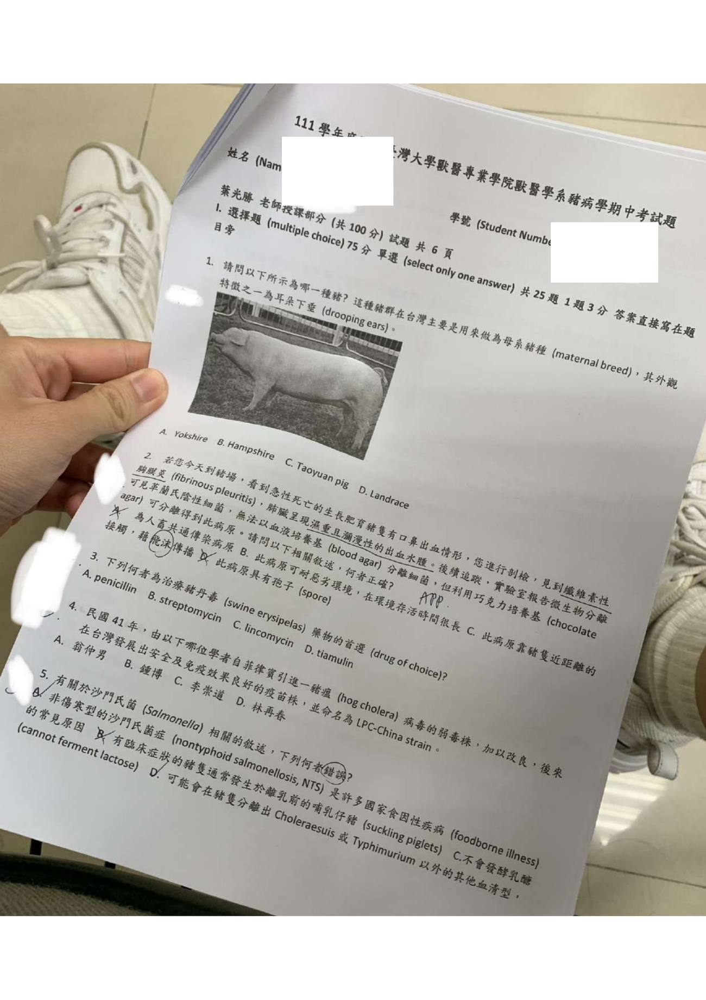
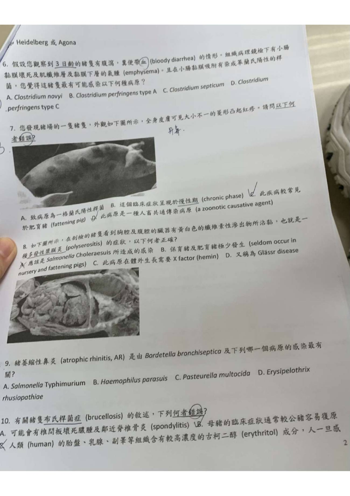
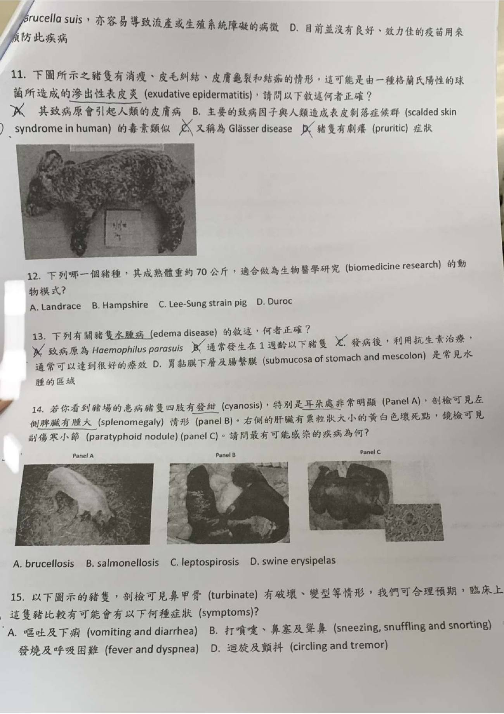
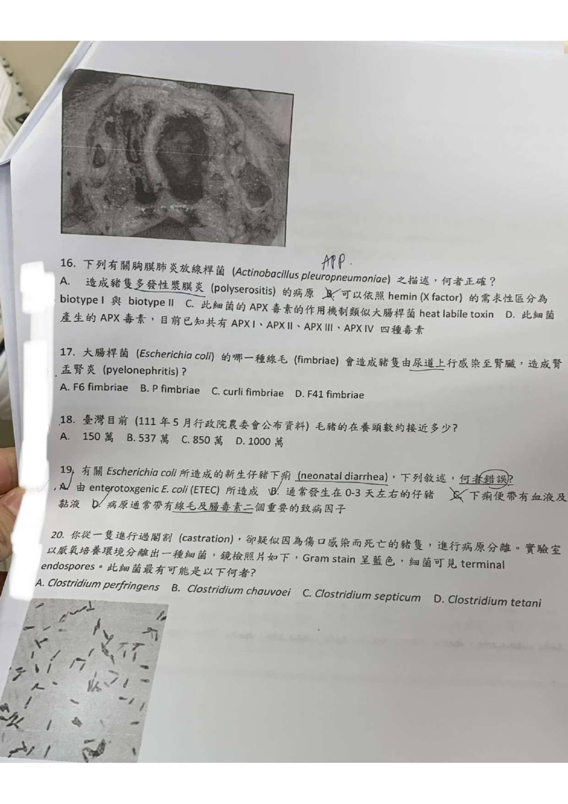
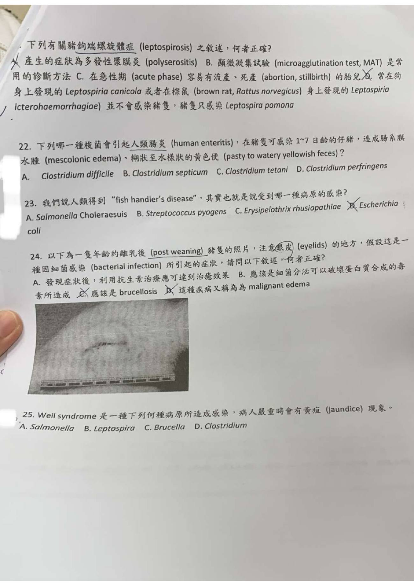
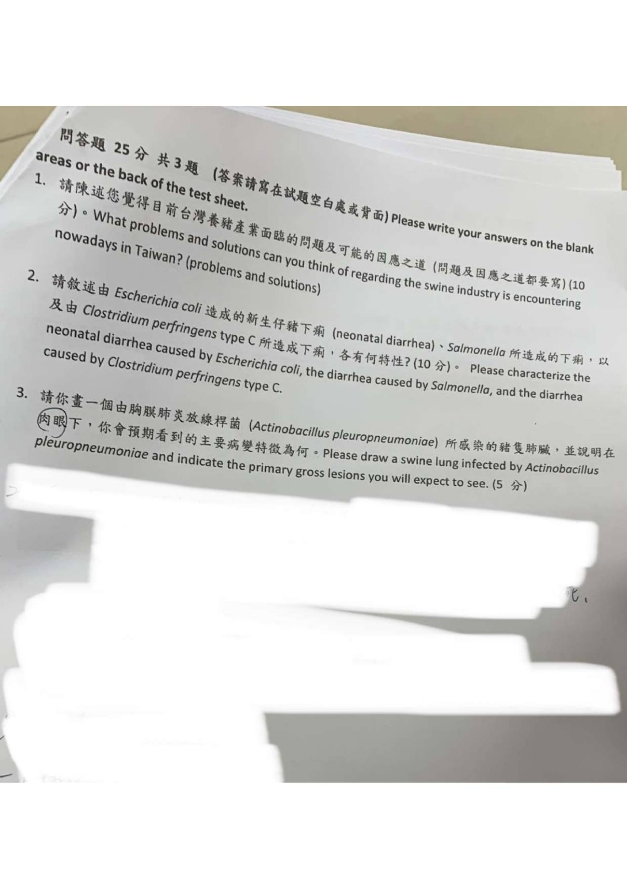
111 學年 Q1（單選）
請問以下所示為哪一種豬？這種豬群在台灣主要是用來做為母系豬種（maternal breed），其外觀特徵之一為耳朵下垂（drooping ears）。（考卷附一張耳朵下垂的白色豬照片）
- (A) Yorkshire
- (B) Hampshire
- (C) Taoyuan pig
- (D) Landrace
答案：(D)
依講義推得 (D)：藍瑞斯是母系、大耳下垂（p.57）。約克夏雖也是母系，但耳朵直立（補充）；漢布夏是黑色公系；桃園豬是黑色土種。此題是依講義內容推得，我沒有在考卷照片上看到紅筆答案。
本題詳解與 第 1 週頁面相同。
111 學年 Q2（單選）
若您今天到豬場，看到急性死亡的生長肥育豬隻有口鼻出血情形，您進行剖檢，見到纖維素性胸膜炎，肺臟呈現濕重且瀰漫性的出血水腫。後續追蹤，實驗室報告微生物分離可見革蘭氏陰性細菌，無法以血液培養基（blood agar）分離細菌，但利用巧克力培養基（chocolate agar）可分離得到此病原。請問以下相關敘述，何者正確？
- (A) 為人畜共通傳染病原
- (B) 此病原可耐惡劣環境，在環境存活時間很長
- (C) 此病原靠豬隻近距離的接觸，藉飛沫傳播
- (D) 此病原具有孢子（spore）
答案：(C)
病原是 APP（需要 NAD 所以要 chocolate agar）。
(C) 對：主要傳播途徑是短距離的鼻對鼻直接接觸（p.10）。
(A) 錯：不是人畜共通（p.8）。
(B) 錯：環境存活時間短，尤其溫暖乾燥時（p.11）。
(D) 錯：APP 不形成孢子（形成孢子的是梭菌、桿菌屬）。
本題詳解與 第 6 週頁面相同。
111 學年 Q3（單選）
下列何者為治療豬丹毒（swine erysipelas）藥物的首選（drug of choice）？
- (A) penicillin
- (B) streptomycin
- (C) lincomycin
- (D) tiamulin
答案：(A)
(A) 對。
本題詳解與 第 7 週頁面相同。
111 學年 Q4（單選）
民國 41 年，由以下哪位學者自菲律賓引進一豬瘟（hog cholera）病毒的弱毒株，加以改良，後來在台灣發展出安全及免疫效果良好的疫苗株，並命名為 LPC-China strain？
- (A) 翁仲男
- (B) 鍾博
- (C) 李崇道
- (D) 林再春
答案：(C)
〔答案：推得〕李崇道博士（第 1 週防治史）。106 學年 Q3 同一事件，改問病名。
111 學年 Q5（單選）
有關於沙門氏菌（Salmonella）相關的敘述，下列何者錯誤？
- (A) 非傷寒型的沙門氏菌症（nontyphoid salmonellosis, NTS）是許多國家食因性疾病（foodborne illness）的常見原因
- (B) 有臨床症狀的豬隻通常發生於離乳前的哺乳仔豬（suckling piglets）
- (C) 不會發酵乳醣（cannot ferment lactose）
- (D) 可能會在豬隻分離出 Choleraesuis 或 Typhimurium 以外的其他血清型，如 Heidelberg 或 Agona
答案：(B)
(B) 錯，所以選它：離乳豬。
(C) 對（p.57）。
本題詳解與 第 7 週頁面相同。
111 學年 Q6（單選）
假設您觀察到 3 日齡的豬隻有腹瀉，糞便帶血（bloody diarrhea）的情形。組織病理鏡檢下有小腸黏膜壞死及肌纖維層及黏膜下層的氣腫（emphysema），且在小腸黏膜吸附有染成革蘭氏陽性的桿菌，您覺得這豬隻最有可能感染以下何種病原？
- (A) Clostridium novyi
- (B) Clostridium perfringens type A
- (C) Clostridium septicum
- (D) Clostridium perfringens type C
答案：(D)
範圍外（期末） 〔答案：推得〕新生仔豬（1 週內）出血性壞死性腸炎＝type C；type A 多為較溫和的下痢（補充）。106 學年 Q5、合卷 Q4。
111 學年 Q7（單選）
您發現豬場的一隻豬隻，外觀如下圖所示，全身皮膚可見大小不一的菱形凸起紅疹。請問以下何者
錯誤？（附圖同講義
p.18）
- (A) 致病原為一格蘭氏陽性桿菌
- (B) 這個臨床症狀呈現於慢性期（chronic phase）
- (C) 此疾病較常見於肥育豬（fattening pig）
- (D) 此病原是一種人畜共通傳染病原（a zoonotic causative agent）
答案：(B)
(B) 錯，所以選它：菱形疹是急性期。
(A)(C)(D) 對。
本題詳解與 第 7 週頁面相同。
111 學年 Q8（單選）
如下圖所示，在剖檢的豬隻看到胸腔及腹腔的臟器有黃白色的纖維素性滲出物所沾黏，也就是一種多發性漿膜炎（polyserositis）的症狀，以下何者正確？（考卷附圖同講義
p.100）
- (A) 應該是 Salmonella Choleraesuis 所造成的感染
- (B) 保育豬及肥育豬極少發生（seldom occur in nursery and fattening pigs）
- (C) 此病原在體外生長需要 X factor（hemin）
- (D) 又稱為 Glässer disease
答案：(D)
(D) 對。
(A) 錯：病原是 G. parasuis。
(B) 錯：保育舍主要問題。
(C) 錯：需要 V 因子，不需要 X 因子（p.89）。
本題詳解與 第 6 週頁面相同。
111 學年 Q9（單選）
豬萎縮性鼻炎（atrophic rhinitis, AR）是由 Bordetella bronchiseptica 及下列哪一個病原的感染最有關？
- (A) Salmonella Typhimurium
- (B) Haemophilus parasuis
- (C) Pasteurella multocida
- (D) Erysipelothrix rhusiopathiae
答案：(C)
(C) 對。
(B) 錯：Glässer 病。
(A)(D) 錯。
本題詳解與 第 6 週頁面相同。
111 學年 Q10（單選）
有關豬隻布氏桿菌症（brucellosis）的敘述，下列何者錯誤？
- (A) 可能會有椎間板壞死膿腫及鄰近脊椎骨炎（spondylitis）
- (B) 母豬的臨床症狀通常較公豬容易復原
- (C) 人類（human）的胎盤、乳腺、副睪等組織含有較高濃度的古柯二醇（erythritol）成分，人一旦感染 Brucella suis，亦容易導致流產或生殖系統障礙的病徵
- (D) 目前並沒有良好、效力佳的疫苗用來預防此疾病
答案：(C)
(C) 錯，所以選它：講義說的是動物組織（p.161）。
(B) 對：母豬大多會恢復（p.163）。
本題詳解與 第 7 週頁面相同。
111 學年 Q11（單選）
下圖所示之豬隻有消瘦、皮毛糾結、皮膚龜裂和結痂的情形。這可能是由一種格蘭氏陽性的球菌所造成的滲出性表皮炎（exudative epidermatitis），請問以下敘述何者正確？
- (A) 其致病原會引起人類的皮膚病
- (B) 主要的致病因子與人類造成表皮剝落症候群（scalded skin syndrome in human）的毒素類似
- (C) 又稱為 Glässer disease
- (D) 豬隻有劇癢（pruritic）症狀
答案：(B)
(B) 對（p.120）。
(A)(C)(D) 錯。
本題詳解與 第 7 週頁面相同。
111 學年 Q12（單選）
下列哪一個豬種，其成熟體重約 70 公斤，適合做為生物醫學研究（biomedicine research）的動物模式？
- (A) Landrace
- (B) Hampshire
- (C) Lee-Sung strain pig
- (D) Duroc
答案：(C)
〔答案：推得〕李宋豬是台灣培育的迷你豬，作實驗動物模式（第 1 週）。
111 學年 Q13（單選）
下列有關豬隻水腫病（edema disease）的敘述，何者正確？
- (A) 致病原為 Haemophilus parasuis
- (B) 通常發生在 1 週齡以下豬隻
- (C) 發病後，利用抗生素治療，通常可以達到很好的療效
- (D) 胃黏膜下層及腸繫膜（submucosa of stomach and mesocolon）是常見水腫的區域
答案：(D)
(D) 對（p.137）。
(A) 錯：溶血性 E. coli。
(B) 錯：離乳後保育豬。
(C) 錯：病程快，預防比治療重要（p.139）。
本題詳解與 第 6 週頁面相同。
111 學年 Q14（單選）
若你看到豬場的患病豬隻四肢有發紺（cyanosis），特別是耳朵處非常明顯（Panel A），剖檢可見左側脾臟有腫大（splenomegaly）情形（Panel B）。右側的肝臟有粟粒狀大小的黃白色壞死點，鏡檢可見副傷寒小節（paratyphoid nodule）（Panel C）。請問最有可能感染的疾病為何？
- (A) brucellosis
- (B) salmonellosis
- (C) leptospirosis
- (D) swine erysipelas
答案：(B)
(B) 對。
(C) 錯：鉤端螺旋體造成生殖障礙（之後的講義）。
(D) 錯：菱形疹。
本題詳解與 第 7 週頁面相同。
111 學年 Q15（單選）
以下圖示的豬隻，剖檢可見鼻甲骨（turbinate）有破壞、變型等情形，我們可合理預期，臨床上這隻豬比較有可能會有以下何種症狀（symptoms）？（考卷附圖同講義
p.72）
- (A) 嘔吐及下痢（vomiting and diarrhea）
- (B) 打噴嚏、鼻塞及聳鼻（sneezing, snuffling and snorting）
- (C) 發燒及呼吸困難（fever and dyspnea）
- (D) 迴旋及顫抖（circling and tremor）
答案：(B)
(B) 對：講義原文 sneeze, snuffle, snort（p.65）。
(A)(C)(D) 錯。
本題詳解與 第 6 週頁面相同。
111 學年 Q16（單選）
下列有關胸膜肺炎放線桿菌（Actinobacillus pleuropneumoniae）之描述，何者正確？
- (A) 造成豬隻多發性漿膜炎（polyserositis）的病原
- (B) 可以依照 hemin（X factor）的需求性區分為 biotype I 與 biotype II
- (C) 此細菌的 APX 毒素的作用機制類似大腸桿菌 heat labile toxin
- (D) 此細菌產生的 APX 毒素，目前已知共有 APX I、APX II、APX III、APX IV 四種毒素
答案：(D)
(D) 對（p.16）。
(A) 錯：多發性漿膜炎是 Glässer 病。
(B) 錯：依 NAD（V 因子）區分。
(C) 錯：Apx 類似 HlyA（RTX），不是 LT（cAMP）。
本題詳解與 第 6 週頁面相同。
111 學年 Q17（單選）
大腸桿菌（Escherichia coli）的哪一種線毛（fimbriae）會造成豬隻由尿道上行感染至腎臟，造成腎盂腎炎（pyelonephritis）？
- (A) F6 fimbriae
- (B) P fimbriae
- (C) curli fimbriae
- (D) F41 fimbriae
答案：(B)
(B) 對（p.148、p.150）。
(A)(D) 錯：ETEC 腸道線毛。
(C) 錯。
本題詳解與 第 6 週頁面相同。
111 學年 Q18（單選）
臺灣目前（111 年 5 月行政院農委會公布資料）毛豬的在養頭數約接近多少？
- (A) 150 萬
- (B) 537 萬
- (C) 850 萬
- (D) 1000 萬
答案：(B)
〔答案：推得〕第 1 週講義的在養頭數表為 537.5 萬頭（第 1 週）。106 學年同題答 540 萬。
111 學年 Q19（單選）
有關 Escherichia coli 所造成的新生仔豬下痢（neonatal diarrhea），下列敘述，何者錯誤？
- (A) 由 enterotoxigenic E. coli（ETEC）所造成
- (B) 通常發生在 0–3 天左右的仔豬
- (C) 下痢便帶有血液及黏液
- (D) 病原通常帶有線毛及腸毒素二個重要的致病因子
答案：(C)
(C) 錯，所以選它：分泌性下痢，黃色水樣、不帶血。
(A)(B)(D) 對（p.117）。
本題詳解與 第 6 週頁面相同。
111 學年 Q20（單選）
你從一隻進行過閹割（castration），卻疑似因為傷口感染而死亡的豬隻，進行病原分離。實驗室以厭氧培養環境分離出一種細菌，鏡檢照片如下，Gram stain 呈藍色，細菌可見 terminal endospores。此細菌最有可能是以下何者？
- (A) Clostridium perfringens
- (B) Clostridium chauvoei
- (C) Clostridium septicum
- (D) Clostridium tetani
答案：(D)
範圍外（期末） 〔答案：推得〕傷口感染、厭氧、革蘭氏陽性、末端芽孢（鼓槌狀）→ 破傷風梭菌（補充）。
111 學年 Q21（單選）
下列有關豬鉤端螺旋體症（leptospirosis）之敘述，何者正確？
- (A) 產生的症狀為多發性漿膜炎（polyserositis）
- (B) 顯微凝集試驗（microagglutination test, MAT）是常用的診斷方法
- (C) 在急性期（acute phase）容易有流產、死產（abortion, stillbirth）的胎兒
- (D) 常在狗身上發現的 Leptospira canicola 或者在棕鼠身上發現的 L. icterohaemorrhagiae 並不會感染豬隻，豬隻只感染 L. pomona
答案：(B)
範圍外（期末） 〔答案：推得；考卷上 (A)(D) 被打叉〕MAT 是標準血清學診斷（補充）。流產多發生在感染後數週的慢性階段；豬也可被其他血清型感染。
111 學年 Q22（單選）
下列哪一種梭菌會引起人類腸炎（human enteritis），在豬隻可感染 1–7 日齡的仔豬，造成腸繫膜水腫（mesocolonic edema）、糊狀至水樣狀的黃色便（pasty to watery yellowish feces）？
- (A) Clostridium difficile
- (B) Clostridium septicum
- (C) Clostridium tetani
- (D) Clostridium perfringens
答案：(A)
範圍外（期末） 〔答案：推得〕與 106 學年 Q19 同題。
111 學年 Q23（單選）
我們說人類得到「fish handler's disease」，其實也就是說受到哪一種病原的感染？
- (A) Salmonella Choleraesuis
- (B) Streptococcus pyogens
- (C) Erysipelothrix rhusiopathiae
- (D) Escherichia coli
答案：(C)
(C) 對（p.10）。
本題詳解與 第 7 週頁面相同。
111 學年 Q24（單選）
以下為一隻年齡約離乳後（post weaning）豬隻的照片，注意眼皮（eyelids）的地方，假設這是一種因細菌感染（bacterial infection）所引起的症狀，請問以下敘述，何者正確？（考卷附圖：眼瞼水腫，同講義
p.140）
- (A) 發現症狀後，利用抗生素治療應可達到治癒效果
- (B) 應該是細菌分泌可以破壞蛋白質合成的毒素所造成
- (C) 應該是 brucellosis
- (D) 這種疾病又稱為 malignant edema
答案：(B)
病是水腫病。
(B) 對：Stx2e 屬志賀毒素家族；（補充）志賀毒素會切斷核糖體 RNA、抑制蛋白質合成，使血管內皮細胞死亡。講義只寫「傷害血管內皮」。
(A) 錯：病程快，預防比治療重要。
(C) 錯：布氏桿菌症造成流產與睪丸炎。
(D) 錯：malignant edema（惡性水腫）是 Clostridium septicum 等梭菌的傷口感染（補充）。
本題詳解與 第 6 週頁面相同。
111 學年 Q25（單選）
Weil syndrome 是一種下列何種病原所造成感染，病人嚴重時會有黃疸（jaundice）現象。
- (A) Salmonella
- (B) Leptospira
- (C) Brucella
- (D) Clostridium
答案：(B)
範圍外（期末） 〔答案：推得〕鉤端螺旋體（106 學年 Q18）。
問答題
問答｜111 學年 Q1（10 分）＝ 106 學年 Q1
請陳述您覺得目前台灣養豬產業面臨的問題及可能的因應之道（問題及因應之道都要寫）。
學長姐答案（106 學年）：密集飼養造成疫病防治困難；以業者為主、政府輔助為共識，養豬場應發揮主動改善；疫情通報要迅速確實、不得隱瞞。
可以再補的點（補充，依第 1 週講義與一般產業現況整理）：
- 疫病：非洲豬瘟境外威脅（廚餘、走私肉品、野豬）；PRRS、PCV2、PED 等地方流行病 → 生物安全、疫苗計畫、邊境管制、疫情通報（第 1 週防治史）。
- 抗生素使用與抗藥性 → 減抗、用藥紀錄、獸醫處方（第 1 週細菌抗藥性）。
- 環保：廢水與臭味 → 沼氣發電、廢水資源化。
- 成本與市場：飼料原料仰賴進口、進口豬肉競爭 → 提升效率、品牌與產銷履歷。
- 人力：缺工與高齡化 → 自動化、規模化。
老師要的是「問題＋因應」成對寫，每個問題後面直接接對策。
問答｜111 學年 Q2（10 分）
請敘述由 Escherichia coli 造成的新生仔豬下痢、Salmonella 所造成的下痢，以及由 Clostridium perfringens type C 所造成下痢，各有何特性？
E. coli（本講義）：0–4 日齡；ETEC 線毛＋腸毒素；黃色水樣、不帶血；腸道不發炎、絨毛不萎縮、胃有凝乳；脫水與酸中毒。
沙門氏菌：見下一講〈細菌性疾病 (II)〉。重點是離乳後保育豬、S. Typhimurium 造成黃色水樣下痢、壞死性結腸炎與盲腸炎、結腸鈕扣狀潰瘍。
C. perfringens type C：不在這兩講的範圍。（補充，供參考）1 週齡內仔豬出血性下痢，小腸（空腸）出血壞死、黏膜下氣腫，β 毒素造成。
本題詳解與 第 6 週頁面相同。
問答｜111 學年 Q3（5 分）
請你畫一個由胸膜肺炎放線桿菌（Actinobacillus pleuropneumoniae）所感染的豬隻肺臟，並說明在肉眼下，你會預期看到的主要病變特徵為何。
畫兩側肺（尖葉、心葉、橫膈葉），在兩側的心葉、尖葉與部分橫膈葉（特別是背側）畫出界線清楚、黑紅色、隆起的病灶，表面畫纖維素並標示與胸壁沾黏。標註：
- 雙側、局部且界線清楚的纖維素出血壞死性胸膜肺炎（p.26）。
- 肺暗紅、質硬，切面流血（p.31）。
- 纖維素性胸膜炎：肺與壁層胸膜沾黏；常伴隨纖維素性心包炎（p.26、p.31）。
- 氣管與支氣管內泡沫樣帶血黏液；胸腔帶血液體（p.26）。
- 慢性病例：纖維性胸膜沾黏（屠宰場所見，p.13、p.29）。
參考圖：講義 p.27（肺葉示意）與 p.29。
本題詳解與 第 6 週頁面相同。
同一個考點在不同年份出現的位置。出現越多次，越要熟。
| 考點 | 出現的題目 | 本站對應 |
|---|
| APP 致病機制（問答） | 106 問答 2、合卷 B 問答 4、111 問答 3（畫肺） | 第 6 週 APP |
| APP 臨床情境（CAMP 陽性、chocolate agar、Apx 分型） | 106 Q2、Q25；合卷 Q5；111 Q2、Q16 | 第 6 週 APP |
| 大腸桿菌新生仔豬下痢（問答） | 106 問答 4、合卷 B 問答 1、111 問答 2 | 第 6 週大腸桿菌 |
| 水腫病、離乳後下痢 | 106 Q20、Q24；合卷 Q15、Q19；111 Q13、Q19、Q24 | 第 6 週 |
| 大腸桿菌尿道感染 P fimbriae | 106 Q28、111 Q17 | 第 6 週 |
| 萎縮性鼻炎（B. bronchiseptica＋P. multocida） | 106 Q6、Q13；合卷 Q10；111 Q9、Q15 | 第 6 週 |
| Glässer disease（H. parasuis） | 106 Q12；合卷 Q11；111 Q8 | 第 6 週 |
| 豬丹毒（菱形疹、penicillin、fish handler） | 106 Q7、Q11；合卷 Q1；111 Q3、Q7、Q23 | 第 7 週 |
| 沙門氏菌（錯誤敘述、紅耳朵、T3SS、副傷寒小結節） | 106 Q4、Q9、Q30；合卷 Q2、Q12；111 Q5、Q14 | 第 7 週 |
| 滲出性表皮炎 | 106 Q8；合卷 Q3、Q17；111 Q11 | 第 7 週 |
| 布氏桿菌 | 106 Q14、Q22；合卷 Q20；111 Q10 | 第 7 週 |
| 李崇道與 LPC 疫苗、在養頭數、品種 | 106 Q1、Q3、Q29；111 Q1、Q4、Q12、Q18 | 第 1 週 |
| 初乳吸收與懷孕期 | 106 Q10；合卷 Q20；2019 Q15 | 第 1 週 |
| 台灣養豬產業問題（問答） | 106 問答 1、111 問答 1 | 第 1 週 |
| 豬瘟：流行病學、DIVA、E2 次單位＋Erns | 合卷 A2；2019／2022 Q1–Q3、Q14 | 第 2 週 |
| 流產病毒＋三種診斷原理（問答） | 合卷 A3；2019、2022 二-1 | 第 3 週 |
| 口蹄疫、豬水疱病、SVV | 合卷 A1；2019／2022 Q8–Q10、Q19 | 第 4 週 |
| 流感 mixing vessel | 合卷 A4；2019／2022 Q11、Q14 | 第 5 週豬流感 |
| TGE 與 PRCV（問答） | 合卷 A5；2019、2022 二-2 | 第 5 週 |
| 範圍外 梭菌 | 106 Q5、Q19；合卷 Q4、Q18；111 Q6、Q20、Q22 | 期末 |
| 範圍外 鉤端螺旋體 | 106 Q18；合卷 Q13；111 Q21、Q25 | 期末 |
| 範圍外 豬赤痢、增生性腸病 | 106 Q15、Q17、Q21、Q23；合卷 Q7、Q8 | 期末 |
答案從哪裡來、哪些題目還有疑問。
- 答案來源：2019 鄭益謙＝考卷藍筆圈選；2022 鄭益謙＝由 2019 反推；106 學年＝老師檢討投影片紅字與學長姐檢討；合卷＝考卷旁手寫答案；111 學年葉光勝＝考卷零星批改記號，其餘由本站推得。都不是官方答案。
- ⚠ 待確認：
- 2019 Q9 (c)「naïve 哺乳仔豬發高燒，24–48 小時內死亡」考卷沒圈，原因不明。
- 2019 Q16 Nipah：考卷沒有作答記號；依常識四個敘述都對，會選 (E)。範圍外。
- 2019／2022 Q19 (b) 口蹄疫：答案會隨出題年份改變（2020 年台澎馬成為非疫區），金門狀態講義未寫。
- 2019 Q20 (b) ryanodine receptor：考卷紅筆打叉，推測錯在「細胞膜」（應為肌漿網）。範圍外。
- 2019 Q3 (a) stamping out：2022 年題幹改問「不正確」時，(a) 是唯一答案，兩卷互相印證；但講義沒有說明為什麼算錯，可以問老師。
- 照片限制：106 學年是翻拍投影幕，Q20、Q27 題幹沒拍到；合卷葉老師問答原卷寫 5 題，照片只有 4 題。
- 合卷的年份：考卷上沒有年份；同學整理檔建立於 2021 年以前。
- 來源檔案：
NTU/考古+國考/大四上考古 from 林/期中/豬/（考古融合 PDF、2022 PDF、lo 資料夾為同一批考卷的另一份）。學長姐 2023 年的張家宜老師講義筆記不是考卷，本頁沒有收。